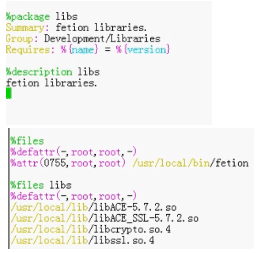

Linux: 软件管理
- TAGS: Linux
摘要：本文介绍软件管理
内容概述
- 软件运行环境
- 软件包基础
- rpm包管理
- yum和dnf 管理
- 定制yum仓库
- 编译安装
- Ubuntu软件管理
软件运行和编译
软件相关概念
ABI
ABI即 Application Binary Interface
Windows与Linux不兼容
- ELF(Executable and Linkable Format)
- PE（Portable Executable）
[root@test ~]# file /bin/hostname
/bin/hostname: ELF 64-bit LSB pie executable, ARM aarch64, version 1 (SYSV), dynamically linked, interpreter /lib/ld-linux-aarch64.so.1, BuildID[sha1]=26daeb4dffa6a2e15eb287407e656a762927380b, for GNU/Linux 3.7.0, stripped
库级别的虚拟化：
- Linux: WINE
- Windows: Cygwin
API
API即Application Programming Interface，API可以在各种不同的操作系统上 实现给应用程序提供完全相同的接口，而它们本身在这些系统上的实现却可能迥 异，主流的操作系统有两种，一种是Windows系统，另一种是Linux系统。由于操 作系统的不同，API又分为Windows API和Linux API。在Windows平台开发出来的 软件在Linux上无法运行，在Linux上开发的软件在Windows上又无法运行，这就 导致了软件移植困难，POSIX标准的出现就是为了解决这个问题
POSIX：Portable Operating System Interface可移植操作系统接口，定义了操 作系统应该为应用程序提供的接口标准，是IEEE为要在各种UNIX操作系统上运行 的软件而定义的一系列API标准的总称。Linux和windows都要实现基本的posix标 准，程序就在源代码级别可移植了
开发语言
系统级开发
- 汇编语言
- C
- C++
应用级开发
- java
- Python
- go
- php
- perl
- delphi
- basic
- ruby
- bash
C语言程序的实现过程
C 程序源代码 –> 预处理 –> 编译 –> 汇编 –> 链接
C语言的程序编译主要经过四个过程：
- 预处理（Pre-Processing）
- 将所有的#define删除，并且展开所有的宏定义
- 处理所有的条件预编译指令，比如#if #ifdef #elif #else #endif等
- 处理#include 预编译指令，将被包含的文件插入到该预编译指令的位置。
- 删除所有注释 "//"和”/* */“.
- 添加行号和文件标识，以便编译时产生调试用的行号及编译错误警告行号。
- 保留所有的#pragma编译器指令，因为编译器需要使用它们
编译 （Compiling）
编译过程就是把预处理完的文件进行一系列的词法分析，语法分析，语义分析 及优化后，最后生成相应的汇编代码
汇编 （Assembling）
汇编器是将汇编代码转变成机器可以执行的命令，每一个汇编语句几乎都对应 一条机器指令。汇编相对于编译过程比较简单，根据汇编指令和机器指令的对 照表一一翻译即可
链接 （Linking）
通过调用链接器ld来链接程序运行需要的一大堆目标文件，以及所依赖的其它 库文件，最后生成可执行文件
范例：gcc 编译过程
cat <<\EOF> hello.c #include <stdio.h> int main(void) { printf("Hello World!\n"); } EOF #分步骤编译运行 gcc -E hello.c -o hello.i #对hello.c文件进行预处理，生成了hello.i 文件 gcc -S hello.i -o hello.s #对预处理文件进行编译，生成了汇编文件 gcc -c hello.s -o hello.o #对汇编文件进行编译，生成了目标文件 gcc hello.o -o hello #对目标文件进行链接，生成可执行文件 #一步实现编译过程 gcc hello.c -o hello 直接编译链接成可执行目标文件
软件模块的静态和动态链接
链接主要作用是把各个模块之间相互引用的部分处理好，使得各个模块之间能够 正确地衔接，分为静态和动态链接
静态链接
- 把程序对应的依赖库复制一份到包
- 生成模块文件libxxx.a
- 嵌入程序包
- 升级难，需重新编译
- 占用较多空间，迁移容易
动态链接
- 只把依赖加做一个动态链接
- 生成模块文件libxxx.so
- 连接指向
- 占用较少空间，升级方便
范例：
root@debian:~/.jasper# file hello hello: ELF 64-bit LSB pie executable, x86-64, version 1 (SYSV), dynamically linked, interpreter /lib64/ld-linux-x86-64.so.2, BuildID[sha1]=6d0e42e93b2869fabde6055a1301dd64870fe558, for GNU/Linux 3.2.0, not stripped #其中 dynamically linked 表示动态链接 #查看程序依赖的第三方库 ldd root@debian:~/.jasper# ldd hello linux-vdso.so.1 (0x00007ffdb99b4000) #.so 文件 shared object 共享的对象 libc.so.6 => /lib/x86_64-linux-gnu/libc.so.6 (0x00007f64b021d000) /lib64/ld-linux-x86-64.so.2 (0x00007f64b0418000)
模块（库）文件
查看二进制程序所依赖的库文件
ldd /PATH/TO/BINARY_FILE
管理及查看本机装载的库文件
#加载配置文件中指定的库文件 ldconfig #显示本机已经缓存的所有可用库文件名及文件路径映射关系 /sbin/ldconfig –p
配置文件：
/etc/ld.so.conf, /etc/ld.so.conf.d/*.conf
范例：
#(2) 导出库文件路径 #编辑/etc/ld.so.conf.d/NAME.conf 添加新的库文件所在目录至此文件中； #让系统重新生成缓存： #ldconfig [-v] #要显示过程就加-v选项 [root@localhost httpd-2.4.18]# cat /etc/ld.so.conf.d/apache2.conf /usr/local/apache2/lib [root@localhost httpd-2.4.18]# ldconfig
缓存文件：
/etc/ld.so.cache
范例：库文件破坏后，将导致依赖的程序无法正常运行
[root@centos8 ~]#ldd /bin/ls
linux-vdso.so.1 (0x00007ffc509fd000)
libselinux.so.1 => /lib64/libselinux.so.1 (0x00007fc6ef24a000)
libcap.so.2 => /lib64/libcap.so.2 (0x00007fc6ef044000)
libc.so.6 => /lib64/libc.so.6 (0x00007fc6eec81000)
libpcre2-8.so.0 => /lib64/libpcre2-8.so.0 (0x00007fc6ee9fd000)
libdl.so.2 => /lib64/libdl.so.2 (0x00007fc6ee7f9000)
/lib64/ld-linux-x86-64.so.2 (0x00007fc6ef698000)
libpthread.so.0 => /lib64/libpthread.so.0 (0x00007fc6ee5d9000)
[root@centos8 ~]#ldd /bin/cat
linux-vdso.so.1 (0x00007ffe335dd000)
libc.so.6 => /lib64/libc.so.6 (0x00007fa34749e000)
/lib64/ld-linux-x86-64.so.2 (0x00007fa347a6b000)
[root@centos8 ~]#mv /lib64/libc.so.6 /tmp
[root@centos8 ~]#ls
ls: error while loading shared libraries: libc.so.6: cannot open shared object
file: No such file or directory
[root@centos8 ~]#cat
cat: error while loading shared libraries: libc.so.6: cannot open shared object
file: No such file or directory
# 动态文件迁移
for i in $(ldd /bin/bash | grep -o '/[^[:space:]]\+[0-9]\>'); do cp $i /mnt/sysroot/lib64 ;done
Java程序编译运行过程
软件包和包管理器
软件包介绍
开源软件最初只提供了.tar.gz的打包的源码文件，用户必须自已编译每个想在 GNU/Linux上运行的软件。用户急需系统能提供一种更加便利的方法来管理这些 软件，当Debian诞生时，这样一个管理工具dpkg也就应运而生，可用来管理deb 后缀的”包”文件。从而著名的”package”概念第一次出现在GNU/Linux系统中， 稍后Red Hat才开发自己的rpm包管理系统
软件包中的文件分类
- 二进制文件
- 库文件
- 配置文件
- 帮助文件
范例：利用 cpio工具查看包文件列表
rpm2cpio 包文件|cpio –itv #预览包内文件 rpm2cpio 包文件|cpio –id "*.conf" #释放包内文件 # rpm2cpio jenkins-2.222.1-1.1.noarch.rpm | cpio -itv
程序包管理器
软件包管理器功能：将编译好的应用程序的各组成文件打包一个或几个程序包文 件，利用包管理器可以方便快捷地实现程序包的安装、卸载、查询、升级和校验 等管理操作
主流的程序包管理器
- redhat：rpm文件, rpm 包管理器，rpm：Redhat Package Manager，后来叫RPM Package Manager
- debian：deb文件, dpkg 包管理器
包命名
源代码打包文件命名：
name-VERSION.tar.gz|bz2|xz VERSION: major.minor.release
rpm包命名方式：
name-VERSION-release.arch.rpm VERSION: major.minor.release release：release.OS
VERSION: major.minor.release
- major:主版本号，重大的版本分支
- minor：次版本号；功能改变
- release：发行号；修复bug，更改一小段代码；
常见的arch：
- x86: i386, i486, i586, i686
- x86_64: x64, x86_64, amd64
- powerpc: ppc
- 跟平台无关：noarch
范例：
bash-3.2-32.el5_9.1.i386.rpm bash-4.2.46-19.el7.x86_64.rpm bash-4.4.19-7.el8.x86_64.rpm bash-4.4.19-7.el8.aarch64.rpm bash-4.4.19-7.el8.ppc64le.rpm bc_1.07.1-2_amd64.deb bc_1.07.1-2_s390x.deb
范例：统计rpm的架构类型及相应的包数量
[root@centos8 Packages]#pwd /misc/cd/BaseOS/Packages [root@centos8 Packages]#ls *.rpm | grep -Eo '[^.]+\.rpm$'| grep -Eo '^[^.]+'|sort |uniq -c 389 i686 211 noarch 1061 x86_64 [root@centos8 Packages]#ls *.rpm |rev|cut -d. -f2|rev |sort |uniq -c 389 i686 211 noarch 1061 x86_64 [root@centos8 Packages]#ls *.rpm | grep -Eo '[^.]+\.rpm$'|cut -d. -f1|sort |uniq -c 389 i686 211 noarch 1061 x86_64
分类和拆包
软件包为了管理和使用的便利，会将一个大的软件分类，放在不同的子包中。
包的分类
- Application-VERSION-ARCH.rpm: 主包
- Application-devel-VERSION-ARCH.rpm 开发子包
- Application-utils-VERSION-ARHC.rpm 其它子包
- Application-libs-VERSION-ARHC.rpm 其它子包
包的依赖
软件包之间可能存在依赖关系，甚至循环依赖，即：A包依赖B包，B包依赖C包， C包依赖A包
安装软件包时，会因为缺少依赖的包，而导致安装包失败。
解决依赖包管理工具：
- yum：rpm包管理器的前端工具
- dnf：Fedora 18+ rpm包管理器前端管理工具，CentOS 8 版代替 yum
- apt：deb包管理器前端工具
- zypper：suse上的rpm前端管理工具
程序包管理器相关文件
- 包文件组成 (每个包独有)
- 包内的文件
- 元数据，如：包的名称，版本，依赖性，描述等
- 可能会有包安装或卸载时运行的脚本
- 数据库(公共)：/var/lib/rpm
- 程序包名称及版本
- 依赖关系
- 功能说明
- 包安装后生成的各文件路径及校验码信息
获取程序包的途径
软件包需要事先将源码进行编译后打包形成，获取包的途径如下：
系统发版的光盘或官方网站
第三方组织提供
- Fedora-EPEL：Extra Packages for Enterprise Linux
SCL： Software Collections, 提供较高版本的第三方软件包
红帽公司创建的软件集合(SCL)项目站点 https://wiki.centos.org/SpecialInterestGroup(2f)SCLo.html
- Community Enterprise Linux Repository：http://www.elrepo.org，支持
最新的内核和硬件相关包 - Rpmforge：官网：http://repoforge.org/， RHEL推荐，包很全，即将关闭
软件项目官方站点
搜索引擎
注意：第三方包建议要检查其合法性，来源合法性,程序包的完整性
自己制作
将源码文件，利用工具，如：rpmbuild，fpm等工具制作成rpm包文件
包管理器rpm
CentOS系统上使用rpm命令管理程序包
功能： 安装、卸载、升级、查询、校验、数据库维护
rpm名: rpm [OPTIONS] [PACKAGE_FILE] 安装 : -i，--install 升级 : -U，--updat，-F，--freshen 卸载 : -e,--erase 查询 : -q,--query 校验 : -V,--verify 数据库维护 : --builddb,--initdb 注意：安装需要输入PACKAGE_FILE，而查询时只需要package名字就行
缺点：不能解决包的依赖问题，rpm命令常用在查询
安装
格式：
rpm {-i|--install} [install-options] PACKAGE_FILE…
选项：
-v: verbose
-vv:
-h: #以#显示程序包管理执行进度
常用组合：
rpm -ivh PACKAGE_FILE ...
rpm包安装[install-options]
--test: 测试安装，但不真正执行安装，即dry run模式
--nodeps：忽略依赖关系
--replacepkgs | replacefiles 重新安装；注意它不能替换配置文件，如果包配置文件被修改建议删掉在使用该参数；
--nosignature: 不检查来源合法性
--nodigest：不检查包完整性
--noscripts：不执行程序包脚本
%pre: 安装前脚本 --nopre
%post: 安装后脚本 --nopost
%preun: 卸载前脚本 --nopreun
%postun: 卸载后脚本 --nopostun
其它
--justdb : 更新数据库，实际没有安装
--root 指定安装的根目录
范例：指定根安装
rpm -ivh /mnt/cdrom/Packages/rpm-4.11-3-40.el7.x86_64.rpm --root=/mnt/sysimage/
升级和降级
rpm包升级
rpm {-U|--upgrade} [install-options] PACKAGE_FILE...
rpm {-F|--freshen} [install-options] PACKAGE_FILE...
--upgrade：安装有旧版程序包，则"升级"，如果不存在旧版程序包，则"安装" --freshen：安装有旧版程序包，则"升级"， 如果不存在旧版程序包，则不执行升级操作 --oldpackage：降级 --force: 强制安装
常用组合
rpm -Uvh PACKAGE_FILE ... rpm -Fvh PACKAGE_FILE ...
升级注意项：
- 不要对内核做升级操作；Linux支持多内核版本并存，因此直接安装新版本内核
- 如果原程序包的配置文件安装后曾被修改，升级时，新版本提供的同一个配 置文件不会直接覆盖老版本的配置文件，而把新版本文件重命名 (FILENAME.rpmnew)后保留
包查询
数据库(公共)：/var/lib/rpm
- 程序包名称及版本
- 依赖关系
- 功能说明
- 包安装后生成的各文件路径及校验码信息
查询会从这数据库中查
rpm {-q|--query} [select-options] [query-options]
[select-options] -a #所有包 -f #查看指定的文件由哪个程序包安装生成 -p rpmfile #针对尚未安装的程序包文件做查询操作 -g,--group GROUP #查询包组中包含了哪些包 [query-options] --changelog #查询rpm包的changelog -c #查询程序的配置文件 -d #查询程序的文档 -i #information信息 -l #查看指定的程序包安装后生成的所有文件 --scripts #程序包自带的脚本 #和CAPABILITY相关 --whatprovides CAPABILITY #查询指定的CAPABILITY由哪个包所提供 --whatrequires CAPABILITY #查询指定的CAPABILITY被哪个包所依赖 --provides #列出指定程序包所提供的CAPABILITY -R #查询指定的程序包所依赖的CAPABILITY
常用查询用法：
已安装包查询 -qa -q PACKAGE -qi PACKAGE -qc PACKAGE -ql PACKAGE -qd PACKAGE -q --scripts PACKAGE #列出包中脚本 -qf FILE #查看指定的文件由哪个程序包安装生成 未安装包查询 -qpi PACKAGE_FILE -qpl PACKAGE_FILE, ...
范例：
# PACKAGE_NAME : 查询指定的程序包是否已经安装，及其版本； rpm -q zsh #精确名或前缀+TAB键补全 # -a,--all : 查询所有已经安装过的包 rpm -qa |grep ^zs rpm -qa zs* #支持通配符 rpm -ql wget #列出包中包含的文件 rpm -q --scripts wget #显示包中脚本内容 rpm -qa --last|head #查看最近安装的包 # -f FILE : 查询指定的文件由哪个程序包安装生成 [root@node01 Packages]# rpm -qf /etc/fstab setup-2.8.71-7.el7.noarch # -i,--info : 程序包相关的信息，版本号、大小、所属的组 rpm -qi bash # --provides : 列出指定的程序包提供的所有的能力CAPABILITY [root@localhost ~]# rpm -q --provides bash /bin/bash /bin/sh bash = 4.2.46-12.el7 bash(x86-64) = 4.2.46-12.el7 config(bash) = 4.2.46-12.el7 # --whatprovides CAPABILITY : 查询指定的能力CAPABILITY由哪个程序包提供 [root@localhost ~]# rpm -q --whatprovides bash bash-4.2.46-12.el7.x86_64 # --whatrequires CAPABILITY : 查询指定的CAPABILITY被哪个包所依赖 [root@localhost ~]# rpm -q --whatprovides 'config(bash)' bash-4.2.46-12.el7.x86_64 # --scripts : 查看程序包自带的脚本片断有哪些 [root@jenkins01 soft]# rpm -qp --scripts tomcat-app-8.0.36-20160817.el7.centos.x86_64.rpm postinstall scriptlet (using /bin/sh): if [ $1 == 1 ]; then
包卸载
格式：
rpm {-e|--erase} [--allmatches] [--nodeps] [--noscripts] [--notriggers] [--test] PACKAGE_NAME ...
注意：当包卸载时，对应的配置文件不会删除， 以FILENAME.rpmsave形式保留
--allmatches：卸载所有匹配的指定名称的程序包的各版本； --nodep：忽略依赖关系 --noscripts：不执行脚本 %pre: 安装前脚本 --nopre %post: 安装后脚本 --nopost %preun: 卸载前脚本 --nopreun %postun: 卸载后脚本 --nopostun --test：测试卸载，dry run模式；
范例：强行删除rpm包，并恢复
[root@centos7 ~]#rpm -e rpm --nodeps #重启进入rescue模式 #mkdir /mnt/cdrom #mount /dev/sr0 /mnt/cdrom #rpm -ivh /mnt/cdrom/Packages/rpm-4.11.3-40.el7.x86_64.rpm --root=/mnt/sysimage #reboot
包校验
在安装包时，系统也会检查包的来源是否是合法的
检查包的完整性和签名
rpm -K|--checksig rpmfile
在检查包的来源和完整性前，必须导入所需要公钥
范例：centos7 导入密钥
rpm --import /etc/pki/rpm-gpg/RPM-GPG-KEY-CentOS-7 # 导入密钥 rpm -qa "gpg-pubkey*" # 检查安装好的密钥
范例：CentOS 8
[root@centos8 ~]#rpm -K /misc/cd/AppStream/Packages/httpd-2.4.37-16.module_el8.1.0+256+ae790463.x86_64.rpm /misc/cd/AppStream/Packages/httpd-2.4.37-16.module_el8.1.0+256+ae790463.x86_64.rpm: digests SIGNATURES NOT OK # 需要事先知道签名，所以上面报错 # 用于检查签名的文件 [root@centos8 ~]#cat /etc/pki/rpm-gpg/RPM-GPG-KEY-centosofficial -----BEGIN PGP PUBLIC KEY BLOCK----- Version: GnuPG v2.0.22 (GNU/Linux) mQINBFzMWxkBEADHrskpBgN9OphmhRkc7P/YrsAGSvvl7kfu+e9KAaU6f5MeAVyn .. ... [root@centos8 ~]#rpm --import /etc/pki/rpm-gpg/RPM-GPG-KEY-centosofficial # 导入签名 [root@centos8 rpm-gpg]#rpm -K /misc/cd/AppStream/Packages/httpd-2.4.37- 16.module_el8.1.0+256+ae790463.x86_64.rpm /misc/cd/AppStream/Packages/httpd-2.4.37- 16.module_el8.1.0+256+ae790463.x86_64.rpm: digests signatures OK [root@centos8 ~]#rpm -qa "gpg-pubkey*" gpg-pubkey-8483c65d-5ccc5b19 [root@centos8 ~]#rpm -qi gpg-pubkey-8483c65d-5ccc5b19 . -----BEGIN PGP PUBLIC KEY BLOCK----- Version: rpm-4.14.2 (NSS-3) mQINBFzMWxkBEADHrskpBgN9OphmhRkc7P/YrsAGSvvl7kfu+e9KAaU6f5MeAVyn ... ...
范例：校验包文件
[root@centos8 ~]#rpm -K /misc/cd/BaseOS/Packages/tree-1.7.0-15.el8.x86_64.rpm /misc/cd/BaseOS/Packages/tree-1.7.0-15.el8.x86_64.rpm: digests signatures OK [root@centos8 ~]#cp /misc/cd/BaseOS/Packages/tree-1.7.0-15.el8.x86_64.rpm /data [root@centos8 ~]#cd /data [root@centos8 data]#ll total 60 -r--r--r-- 1 root root 60780 Apr 8 10:11 tree-1.7.0-15.el8.x86_64.rpm [root@centos8 data]#echo >>tree-1.7.0-15.el8.x86_64.rpm [root@centos8 data]#ll tree-1.7.0-15.el8.x86_64.rpm -r--r--r-- 1 root root 60781 Apr 8 10:11 tree-1.7.0-15.el8.x86_64.rpm [root@centos8 data]#cd [root@centos8 ~]#rpm -K /data/tree-1.7.0-15.el8.x86_64.rpm /data/tree-1.7.0-15.el8.x86_64.rpm: DIGESTS SIGNATURES NOT OK
软件在安装时，会将包里的每个文件的元数据，如：大小，权限，所有者，时间 等记录至rpm相关的数据库中，可以用来检查包中的文件是否和当初安装时有所 变化
rpm {-V|--verify} [select-options] [verify-options]
范例：查看包从安装后是否更改过
[root@centos8 ~]#rpm -V centos-release S.5....T. c /etc/issue S file Size differs M Mode differs (includes permissions and file type) 5 digest (formerly MD5 sum) differs D Device major/minor number mismatch L readLink(2) path mismatch U User ownership differs G Group ownership differs T mTime differs P capabilities differ . (点) 表示当前位置代表的字符含义一致 c 所在的位置表示文件类型 c 配置文件 d 文件数据文件 g 该文件不属于某个文件(极少情况) l 许可证文件(license file) r 自述文件(READ ME) 可以看到，结果显示了文件被修改的信息。该信息可分为以下 3 部分： 1 最前面的 8 个字符（S.5....T）都属于验证信息，各字符的具体含义如下： S：文件大小是否改变。 M：文件的类型或文件的权限（rwx）是否改变。 5：文件MD5校验和是否改变（可以看成文件内容是否改变）。 D：设备的主从代码是否改变。 L：文件路径是否改变。 U：文件的属主（所有者）是否改变。 G：文件的属组是否改变。 T：文件的修改时间是否改变。 .：若相关项没发生改变，用 . 表示。 2 被修改文件类型，大致可分为以下几类： c：配置文件（configuration file）。 d：普通文档（documentation）。 g："鬼"文件（ghost file），很少见，就是该文件不应该被这个 RPM 包包含。 l：授权文件（license file）。 r：描述文件（read me）。 3 被修改文件所在绝对路径（包含文件名）。 # S.5....T. c /etc/httpd/conf/httpd.conf 表达的完整含义是：配置文件 httpd.conf 的大小、内容、修改时间被人为修改过。
范例：检查包是否被篡改过
[root@centos8 ~]#rpm -qf /etc/issue centos-release-8.1-1.1911.0.8.el8.x86_64 [root@centos8 ~]#vim /var/lib/rpm^C/etc/issue [root@centos8 ~]#vim /etc/issue welcome to u \S Kernel \r on an \m #验证整个包是否包改过 [root@centos8 ~]#rpm -V centos-release S.5....T. c /etc/issue [root@centos8 ~]#vim /etc/issue [root@centos8 ~]#cat /etc/issue \S Kernel \r on an \m [root@centos8 ~]# [root@centos8 ~]#rpm -V centos-release .......T. c /etc/issue [root@centos8 ~]#rpm -ql centos-release /etc/centos-release /etc/centos-release-upstream /etc/issue /etc/issue.net /etc/os-release /etc/redhat-release /etc/rpm/macros.dist /etc/system-release /etc/system-release-cpe /usr/lib/systemd/system-preset/85-display-manager.preset /usr/lib/systemd/system-preset/90-default.preset /usr/lib/systemd/system-preset/99-default-disable.preset /usr/share/centos-release/EULA /usr/share/doc/centos-release/Contributors /usr/share/doc/centos-release/GPL /usr/share/doc/redhat-release /usr/share/redhat-release [root@centos8 ~]#rpm -Va # 检查的包有没有改变 .M....... g /run/dbus .......T. /usr/bin/tree .M....... c /etc/machine-id missing c /etc/systemd/system/dbus-org.freedesktop.resolve1.service .M....... g /var/cache/private .M....... g /var/lib/private .M....... g /var/log/btmp .M....... g /var/log/private S.5....T. c /etc/issue .M....G.. g /var/log/lastlog .M....... d /usr/share/info/dir.old .M....... g /var/cache/dnf/packages.db .M....... g /var/lib/plymouth/boot-duration .......T. c /etc/kdump.conf S.5....T. c /etc/ssh/sshd_config .M....... c /etc/rc.d/rc.local S.5....T. c /root/.bashrc .M....... g /etc/crypto-policies/back-ends/nss.config .M....... g /etc/udev/hwdb.bin .M....... g /var/lib/systemd/random-seed missing c /etc/yum.repos.d/CentOS-AppStream.repo missing c /etc/yum.repos.d/CentOS-Base.repo missing c /etc/yum.repos.d/CentOS-CR.repo missing c /etc/yum.repos.d/CentOS-Debuginfo.repo missing c /etc/yum.repos.d/CentOS-Extras.repo missing c /etc/yum.repos.d/CentOS-HA.repo missing c /etc/yum.repos.d/CentOS-Media.repo missing c /etc/yum.repos.d/CentOS-PowerTools.repo missing c /etc/yum.repos.d/CentOS-Sources.repo missing c /etc/yum.repos.d/CentOS-Vault.repo missing c /etc/yum.repos.d/CentOS-centosplus.repo missing c /etc/yum.repos.d/CentOS-fasttrack.repo .M....... /var/log/audit #验证软件包中的单个文件，如果文件没有被修改过，则不输出任何信息 rpm -Vf /etc/crontab #验证整个软件包是否被修改过 rpm -Vp AdobeReader_chs-7.0.9-1.i386.rpm
数据库
rpm包安装时生成的信息，都放在rpm数据库中
/var/lib/rpm
可以重建数据库
rpm {--initdb|--rebuilddb}
initdb: 初始化，如果事先不存在数据库，则新建之，否则，不执行任何操作
rebuilddb：重建已安装的包头的数据库索引目录
报错-解决yum install时出现Thread died in Berkeley DB library的错误
$ yum install wireshark wireshark-gnome error: rpmdb: BDB0113 Thread/process 3336/140141695063872 failed: BDB1507 Thread died in Berkeley DB library error: db5 error(-30973) from dbenv->failchk: BDB0087 DB_RUNRECOVERY: Fatal error, run database recovery error: cannot open Packages index using db5 - (-30973) error: cannot open Packages database in /var/lib/rpm CRITICAL:yum.main: Error: rpmdb open failed
原因： 提示rpm相关的数据库损坏了
解决：
mkdir /var/lib/rpm/backup cp -a /var/lib/rpm/__db* /var/lib/rpm/backup/ rm -f /var/lib/rpm/__db.[0-9][0-9]* rpm --quiet -qa rpm --rebuilddb yum clean all
yum和dnf
CentOS 使用 yum, dnf 解决rpm的包依赖关系
YUM: Yellowdog Update Modifier，rpm的前端程序，可解决软件包相关依赖性， 可在多个库之间定位软件包，up2date的替代工具，CentOS 8 用dnf 代替了yum ,不过保留了和yum的兼容性，配置也是通用的
yum/dnf 工作原理
yum/dnf 是基于C/S 模式
- yum 服务器存放rpm包和相关包的元数据库
- yum 客户端访问yum服务器进行安装或查询等
yum 实现过程
先在yum服务器上创建 yum repository（仓库），在仓库中事先存储了众多rpm 包，以及包的相关的元数据文件（放置于特定目录repodata下），当yum客户端 利用yum/dnf工具进行安装时包时，会自动下载repodata中的元数据，查询远数 据是否存在相关的包及依赖关系，自动从仓库中找到相关包下载并安装。
yum获取rpm包过程：
- 客户端远程连接到提供资源的服务端求情数据
- 服务端将保持有包的相关元数据信息文件发送给客户端，不过在这之前有一 次发送校验码的过程(repodata目录下repomd.xml文件)；通常元数据文件放 在特定的目录下，而每个元数据文件都有与之对应的校验码以方便查询其完 整性；
- 客户端将元数据文件放置于本地缓存区域中，并根据元数据文件分析是否有 所需的rpm包名及依赖关系等；
- 客户端检查本地是否有rpm包相关依赖关系的文件
- 客户端远程连接至服务端下载所需rpm包，并缓存到本地执行安装；
- 客户端默认会删除下载的rpm包，但元数据文件不会删除；
yum客户端配置
yum客户端配置文件
/etc/yum.conf #为所有仓库提供公共配置 /etc/yum.repos.d/*.repo #为每个仓库的提供配置文件
帮助参考： man 5 yum.conf
/etc/yum.conf主配置定义
范例：CentOS 8 配置文件
[root@centos8 ~]# ll /etc/yum.conf lrwxrwxrwx. 1 root root 12 May 14 2019 /etc/yum.conf -> dnf/dnf.conf [root@centos8 ~]#cat /etc/yum.conf [main] gpgcheck=1 #安装包前要做包的合法和完整性校验 installonly_limit=3 #同时可以安装3个包，最小值为2，如设为0或1，为不限制 clean_requirements_on_remove=True #删除包时，是否将不再使用的包删除 best=True #升级时，自动选择安装最新版，即使缺少包的依赖
范例：CentOS 7的配置文件
[root@centos7 ~]# ll /etc/yum.conf -rw-r--r--. 1 root root 970 Aug 8 19:57 /etc/yum.conf [root@centos7 ~]# cat /etc/yum.conf [main] cachedir=/var/cache/yum/$basearch/$releasever # 缓存文件路径 keepcache=0 #本地缓存是否保存(rpm包) debuglevel=2 # 调试级别 logfile=/var/log/yum.log # 安装的日志文件 exactarch=1 # 是否精确平台release匹配 obsoletes=1 gpgcheck=1 # 是否检查来源合法性和完整性 plugins=1 # 是否支持插件机制 installonly_limit=5 # 同时安装几个程序包 bugtracker_url=http://bugs.centos.org/set_project.php? # 追踪bug路径 project_id=23&ref=http://bugs.centos.org/bug_report_page.php?category=yum distroverpkg=centos-release # 当前发行版版本号从哪儿获取
仓库(*.repo)配置文件定义：
repo仓库配置文件指向的定义：
[repositoryID] #仓库ID，唯一标识别，不能重复 name=Some name for this repository # 完整的仓库名称，注意 = 等号左右不要有空格，否则可能会出现语法错误 baseurl=url://path/to/repository/ # yum仓库指明的访问路径，多个url换行写。repodata 所在的路径就是 yum 源指向的路径. enabled={1|0} # 是否启用此仓库，默认1启动 其它选项： keepcache={1|0} : 本地缓存是否保存(rpm包) enabled={1|0} : 是否启用此仓库，默认启动 gpgcheck={1|0} : 是否检查来源合法性和完整性, 默认1检查 repo_gpgcheck={1|0} : 检查元数据完整性 gpgkey=URL : 秘钥文件位置，可能是对方仓库提供 enablegroups={1|0} : 是否支持组批量管理程序包，默认支持 failovermethod={roundrobin|priority} : 指明baseurl有多个时的优先级； roundrobin：意为随机挑选，默认值 priority:按顺序访问，上而下请求 cost= : 开销；默认为1000；多个仓库里都有同一个rpm包可定义开销，越小越先访问； mirrorlist : 以镜像方式指定 baseurl。 一个 baseurl 在指定多个 url 时管理起来不方便，在互联网中找一台服务器，在服务器上的通过文件服务的共享位置创建一个文本文件，在文本文件中列表出 baseurl 的访问路径，mirrorlist指向这个文本文件。使用mirrorlist 要求 yum 有插件功能 bandwidth : 带宽限制 username : 用户名 password : 有些服务器访问时需要用户来密码 keepalive=｛1|0｝: 是否使用保持连接 说明： 1) *.repo可以将多个[repositoryID]的配置信息放在一个而文件内，也可以切成多个方便管理 2) baseurl可以使用：ftp://、http://、nfs://、file:/// 指明URL路径 3)baseurl等号两边不能有空格，其后可以填写多个镜像访问路径，每行一个，不能顶行写 多个访问路径间联系是镜像相同，目的是为了做备用访问 4)更多选项使用man 5 yum.conf查看，基本配置只需前三行就可以 5)发行版光盘镜像安装可能会自动配置网络镜像URL地址
yum服务器的baseurl形式
file:// 本地路径 http:// https:// ftp://
注意：yum仓库指向的路径一定必须是repodata目录所在目录
相关变量
yum的repo配置文件中可用的变量： $releasever #当前OS的发行版的主版本号，如：8，7，6 $arch #CPU架构，如：aarch64, i586, i686，x86_64等 $basearch #系统基础平台；i386, x86_64 $contentdir #表示目录，比如：centos-8，centos-7 $YUM0-$YUM9 #自定义变量
范例：
http://server/centos/$releasever/$basearch/ http://server/centos/7/x86_64 http://server/centos/6/i386
baseurl指向的路径
阿里云提供了写好的CentOS和ubuntu的仓库文件下载链接http://mirrors.aliyun.com/repo/
Rocky 系统yun源
#南京大学 https://mirror.nju.edu.cn/rocky/$releasever/ #上海交大 https://mirror.sjtu.edu.cn/rocky/$releasever/ #山东大学 https://mirrors.sdu.edu.cn/rocky/$releasever/
CentOS系统的yum源
#阿里云 https://mirrors.aliyun.com/centos/$releasever/ #清华大学 https://mirrors.tuna.tsinghua.edu.cn/centos/$releasever/ #华为云 https://mirrors.huaweicloud.com/centos/$releasever/
EPEL的yum源
#阿里云 https://mirrors.aliyun.com/epel/$releasever/ #腾讯云 https://mirrors.cloud.tencent.com/centos/$releasever/ #华为云 https://mirrors.huaweicloud.com/epel/$releasever/ #清华大学 https://mirrors.tuna.tsinghua.edu.cn/epel/$releasever/
阿里巴巴开源软件
https://opsx.alibaba.com/
范例：为CentOS7用系统安装光盘作的本地yum仓库
#挂载光盘至某目录,如/mnt/cdrom mount /dev/cdrom /mnt/cdrom #创建配置文件 [root@centos7 ~]#vim /etc/yum.repos.d/centos7.repo [CentOS7] name=CentOS 7 baseurl=file:///mnt/cdrom gpgcheck=0 enabled=1
范例：为Rocky配置 yum 的系统和EPEL源仓库
#支持光盘， /misc/cd对应就是光盘内容 yum install autofs systemctl enable --now autofs
[root@centos8 ~]#cat /etc/yum.repos.d/base.repo [BaseOS] name=BaseOS baseurl=file:///misc/cd/BaseOS https://mirror.nju.edu.cn/rocky/$releasever/BaseOS/$basearch/os/ gpgcheck=1 gpgkey=/etc/pki/rpm-gpg/RPM-GPG-KEY-centosofficial [AppStream] name=AppStream baseurl=file:///misc/cd/AppStream https://mirror.nju.edu.cn/rocky/$releasever/AppStream/$basearch/os/ gpgcheck=0 [extras] name=extras baseurl=https://mirror.nju.edu.cn/rocky/$releasever/extras/$basearch/os/ gpgcheck=0 [epel] name=EPEL baseurl=http://mirrors.aliyun.com/epel/$releasever/Everything/$basearch https://mirrors.tuna.tsinghua.edu.cn/epel/$releasever/Everything/$basearch/ gpgcheck=0 enabled=1
注意：与之前的版本不同，CentOS 8 系统有两个yum 源：BaseOS和AppStream， 需要分别设置两个仓库
范例：用脚本实现创建yum仓库配置文件
[root@centos7 ~]# cat yum.sh #!/bin/bash mkdir /etc/yum.repos.d/backup mv /etc/yum.repos.d/*.repo /etc/yum.repos.d/backup cat > /etc/yum.repos.d/base.repo <<EOF [base] name=base baseurl=https://mirrors.aliyun.com/centos/\$releasever/os/\$basearch gpgcheck=0 EOF
yum-config-manager命令
可以生成yum仓库的配置文件及启用或禁用仓库，来自于yum-utils包
格式：
yum-config-manager --add-repo URL或file #增加仓库 yum-config-manager --disable "仓库名" #禁用仓库 yum-config-manager --enable "仓库名" #启用仓库
范例：创建仓库配置
[root@centos8 ~]#rpm -qf `which yum-config-manager `
dnf-utils-4.0.2.2-3.el8.noarch
[root@centos8 ~]#yum-config-manager --add-repo https://mirrors.aliyun.com/docker-ce/linux/centos/docker-ce.repo
Adding repo from: https://mirrors.aliyun.com/docker-ce/linux/centos/docker-ce.repo
[root@centos8 ~]#ls /etc/yum.repos.d/
backup base.repo docker-ce.repo
范例：创建仓库配置
#生成172.16.0.1_cobbler_ks_mirror_8_.repo [root@centos8 ~]#yum-config-manager --add-repo=http://172.16.0.1/cobbler/ks_mirror/8/ [root@centos8 ~]#cat /etc/yum.repos.d/172.16.0.1_cobbler_ks_mirror_8_.repo [172.16.0.1_cobbler_ks_mirror_8_] name=created by dnf config-manager from http://172.16.0.1/cobbler/ks_mirror/8/ baseurl=http://172.16.0.1/cobbler/ks_mirror/8/ enabled=1
范例：创建仓库配置
[root@centos8 ~]#ls /etc/yum.repos.d/ backup base.repo [root@centos8 ~]#yum-config-manager --add-repo /data/docker-ce.repo Adding repo from: file:///data/docker-ce.repo [root@centos8 ~]#ls /etc/yum.repos.d/ backup base.repo docker-ce.repo [root@centos8 ~]#yum repolist
范例：启用和禁用仓库
[root@centos8 ~]#yum-config-manager --disable epel # 禁用epel源 [root@centos8 ~]#cat /etc/yum.repos.d/base.repo [BaseOS] name=BaseOS baseurl=file:///misc/cd/BaseOS gpgcheck=0 [AppStream] name=AppStream baseurl=file:///misc/cd/AppStream gpgcheck=0 [epel] name=EPEL baseurl=http://mirrors.aliyun.com/epel/$releasever/Everything/$basearch http://mirrors.huaweicloud.com/epel/$releasever/Everything/$basearch gpgcheck=0 enabled=0 [extras] name=extras baseurl=https://mirrors.aliyun.com/centos/$releasever/extras/$basearch/os http://mirrors.huaweicloud.com/centos/$releasever/extras/$basearch/os gpgcheck=0 enabled=1 [root@centos8 ~]#yum repolist [root@centos8 ~]#yum-config-manager --disable extras [root@centos8 ~]#yum repolist BaseOS 3.8 MB/s | 3.9 kB 00:00 AppStream 4.2 MB/s | 4.3 kB 00:00 repo id repo name status AppStream AppStream 4,755 BaseOS BaseOS 1,659 [root@centos8 ~]#yum-config-manager --enable extras [root@centos8 ~]#yum repolist BaseOS 3.8 MB/s | 3.9 kB 00:00 AppStream 4.2 MB/s | 4.3 kB 00:00 extras 12 kB/s | 1.5 kB 00:00 repo id repo name status AppStream AppStream 4,755 BaseOS BaseOS 1,659 extras extras 12
锁定软件版本
锁定后版本无法更新
sudo cat /etc/yum/pluginconf.d/versionlock.conf [main] enabled = 1 locklist = /etc/yum/pluginconf.d/versionlock.list # Uncomment this to lock out "upgrade via. obsoletes" etc. (slower) # follow_obsoletes = 1 cat /etc/yum/pluginconf.d/versionlock.list # Added locks on Sat Mar 4 23:44:04 2023 0:kernel-5.4.231-137.341.amzn2.* # Added locks on Sat Mar 4 23:44:14 2023 0:runc-1.1.4-1.amzn2.* # Added locks on Sat Mar 4 23:44:20 2023 0:containerd-1.6.6-1.amzn2.0.2.* # Added locks on Sat Mar 4 23:44:47 2023
yum命令
yum命令的用法：
yum [options] [command] [package ...]
yum的命令行选项：
-y #自动回答为"yes" -q #静默模式 --nogpgcheck #禁止进行gpg check --enablerepo=repoidglob #临时启用此处指定的repo，支持通配符，如："*" --disablerepo=repoidglob #临时禁用此处指定的repo,和上面语句同时使用，放在后面的生效 --showduplicates 如果多加了仓库源，可显示包的多个版本
显示仓库列表
yum repolist [all|enabled|disabled] -v #显示仓库信息，包总数、总大小等
范例：
[root@centos8 ~]#yum repolist [root@centos8 ~]#yum repolist all [root@centos8 ~]#yum repolist -v ...... pkgsack time: 0.011 Repo-id : base/7/x86_64 Repo-name : CentOS-7 - Base Repo-revision: 1604001756 Repo-updated : Thu Oct 29 20:03:00 2020 Repo-pkgs : 10,072 Repo-size : 8.9 G Repo-mirrors : http://mirrorlist.centos.org/?release=7&arch=x86_64&repo=os&infra=genclo Repo-baseurl : https://download.cf.centos.org/centos/7/os/x86_64/ (1 more) Repo-expire : 21,600 second(s) (last: Mon Sep 23 05:38:09 2024) Filter : read-only:present Repo-filename: /etc/yum.repos.d/CentOS-Base.repo [root@centos8 ~]#yum --enablerepo=ep* --disablerepo=A* repolist # 临时禁用ep开头的源，启用A开头的源 Last metadata expiration check: 0:01:18 ago on Sun 29 Dec 2019 12:13:27 AM CST. repo id repo name status BaseOS BaseOS 1,657 epel EPEL 3,733
显示程序包
yum list
yum list [all | glob_exp1] [glob_exp2] [...]
yum list {available|installed|updates} [glob_exp1] [...]
范例：
[root@centos8 data]#dnf list mariadb-server [root@centos8 data]#dnf list mariadb* #支持通配符 [root@centos8 data]#dnf list mariadb-server --showduplicates # --showduplicates 如果多加了仓库源，可显示包的多个版本 [root@centos8 data]#dnf list mariadb-server --disablerepo=AppStream [root@centos8 data]#dnf list mariadb-server --showduplicates --disablerepo=AppStream Last metadata expiration check: 0:05:41 ago on Sun 08 Dec 2019 04:11:17 PM CST. Available Packages MariaDB-server.x86_64 10.3.17-1.el8 mariadb MariaDB-server.x86_64 10.3.18-1.el8 mariadb MariaDB-server.x86_64 10.3.20-1.el8 mariadb MariaDB-server.x86_64 10.4.7-1.el8 mariadb2 MariaDB-server.x86_64 10.4.8-1.el8 mariadb2 MariaDB-server.x86_64 10.4.10-1.el8 mariadb2 [root@centos8 ~]#yum --disablerepo="A*" --disablerepo="B*" --disablerepo="e*" list available # 过滤出可用的包
安装程序包
yum install package1 [package2] [...] yum reinstall package1 [package2] [...] #重新安装
范例：只用 base 源安装服务
yum -y --disablerepo=* --enablerepo=base install bridge-utils
范例：安装epel源
[root@centos7 ~]#yum remove epel-release [root@centos7 ~]#yum -y install sl [root@centos7 ~]#rpm -ql sl #运行安装sl程序，可以看到下面火车，这标志着我们可以当老司机了 [root@centos7 ~]#sl -a
范例：只下载不安装
# 方法1 yum # 下载包到指定目录 yum install --downloadonly --downloaddir=/tmp/php/ php73-php-fpm #在CentOS/RHEL 6或更早期的版本中，你需要安装一个单独yum插件(名称为 yum-plugin-downloadonly)才能使用--downloadonly命令选项 # 方法2 yumdownloader #另外一个下载RPM包的方法就是通过一个专门的包下载工具--yumdownloader。 这个工具是yum工具包(包含了用来进行yum包管理的帮助工具套件)的子集。 yum install yum-utils yumdownloader lsof --resolve --destdir=/data/mydepot/ #resolve下载依赖
范例：利用elrepo源在CentOS 7 安装新版内核
[root@centos7 ~]#yum install https://www.elrepo.org/elrepo-release-7.0-4.el7.elrepo.noarch.rpm [root@centos7 ~]#rpm -ql elrepo-release-7.0-4.el7.elrepo /etc/pki/elrepo /etc/pki/elrepo/SECURE-BOOT-KEY-elrepo.org.der /etc/pki/rpm-gpg /etc/pki/rpm-gpg/RPM-GPG-KEY-elrepo.org /etc/yum.repos.d /etc/yum.repos.d/elrepo.repo [root@centos7 ~]#yum repolist [root@centos7 ~]#cat /etc/yum.repos.d/elrepo.repo ... ... [elrepo-kernel] name=ELRepo.org Community Enterprise Linux Kernel Repository - el7 baseurl=http://elrepo.org/linux/kernel/el7/$basearch/ http://mirrors.coreix.net/elrepo/kernel/el7/$basearch/ http://mirror.rackspace.com/elrepo/kernel/el7/$basearch/ http://repos.lax-noc.com/elrepo/kernel/el7/$basearch/ mirrorlist=http://mirrors.elrepo.org/mirrors-elrepo-kernel.el7 enabled=0 gpgcheck=1 gpgkey=file:///etc/pki/rpm-gpg/RPM-GPG-KEY-elrepo.org protect=0 ... ... [root@centos7 ~]#yum --disablerepo="*" --enablerepo="elrepo-kernel" repolist [root@u ~]#yum -y --enablerepo="elrepo-kernel" install kernel-lt #安装最新内核. kernel-lt-* 是长期支持版， kernel-ml-* 主线版即测试版 [root@centos7 ~]#ls /boot initramfs-3.10.0-957.el7.x86_64.img initramfs-5.4.6-1.el7.elrepo.x86_64.img [root@centos7 ~]#ls /lib/modules 3.10.0-957.el7.x86_64 5.4.6-1.el7.elrepo.x86_64 [root@centos7 ~]#reboot [root@centos7 ~]#uname -r 5.4.6-1.el7.elrepo.x86_64 #卸载内核, 先切到旧内核 yum remove kernel-lt
卸载程序包
yum remove | erase package1 [package2] [...]
升级和降级
升级和降级
yum update [package1] [package2] [...] yum downgrade package1 [package2] [...] (降级)
范例:
[root@centos7 ~]# cat /etc/yum.repos.d/base.repo [base] name=aliyum base baseurl=https://mirrors.aliyun.com/centos/$releasever/os/$basearch gpgcheck=1 gpgkey=https://mirrors.aliyun.com/centos/$releasever/os/x86_64/RPM-GPG-KEY- CentOS-$releasever enabled=1 [update] name=aliyun update baseurl=https://mirrors.aliyun.com/centos/7/updates/x86_64/ gpgcheck=0 [root@centos7 ~]#yum --disablerepo=* --enablerep=updates list available [root@centos7 ~]#yum info samba [root@centos7 ~]#yum info samba --showduplicates # 显示多个版本 Name : samba Arch : x86_64 Version : 4.9.1 Release : 6.el7 Name : samba Arch : x86_64 Version : 4.9.1 Release : 10.el7_7 [root@centos7 ~]#yum install samba --disablerepo=updates [root@centos7 ~]#yum update samba [root@centos7 ~]# yum update
检查可用升级：
yum check-update
查询
查看程序包information：
yum info [...]
查看指定的特性(可以是某文件)是由哪个程序包所提供：
yum provides | whatprovides feature1 [feature2] [...]
注意：文件要写全路径，而不只是文件名，否则无法查询到
以指定的关键字搜索程序包名及summary信息
yum search string1 [string2] [...]
查看指定包所依赖的capabilities：
yum deplist package1 [package2] [...]
范例：
[root@centos8 ~]#dnf info bash
Last metadata expiration check: 0:25:44 ago on Sun 22 Dec 2019 01:56:36 PM CST.
Installed Packages
Name : bash
Version : 4.4.19
Release : 7.el8
Arch : x86_64
Size : 6.6 M
Source : bash-4.4.19-7.el8.src.rpm
Repo : @System
From repo : anaconda
Summary : The GNU Bourne Again shell
URL : https://www.gnu.org/software/bash
License : GPLv3+
Description : The GNU Bourne Again shell (Bash) is a shell or command language
: interpreter that is compatible with the Bourne shell (sh). Bash
: incorporates useful features from the Korn shell (ksh) and the C
shell
: (csh). Most sh scripts can be run by bash without modification.
范例:
[root@centos8 ~]# ll /etc/vsftpd/vsftpd.conf ls: cannot access '/etc/vsftpd/vsftpd.conf': No such file or directory #注意要写文件全路径才能查询到 [root@centos8 ~]#yum provides vsftpd.conf Last metadata expiration check: 0:56:45 ago on Fri 10 Apr 2020 11:24:00 AM CST. Error: No Matches found [root@centos8 ~]# yum provides /etc/vsftpd/vsftpd.conf Last metadata expiration check: 0:33:13 ago on Fri 27 Dec 2019 03:47:34 PM CST. vsftpd-3.0.3-28.el8.x86_64 : Very Secure Ftp Daemon Repo : AppStream Matched from: Filename : /etc/vsftpd/vsftpd.conf yum provides */mime.types #匹配包文件包含mime.types的包
范例：
[root@centos8 ~]#rpm -ivh /misc/cd/AppStream/Packages/httpd-2.4.37-16.module_el8.1.0+256+ae790463.x86_64.rpm error: Failed dependencies: /etc/mime.types is needed by httpd-2.4.37-16.module_el8.1.0+256+ae790463.x86_64 [root@centos8 ~]#yum provides /etc/mime.types mailcap-2.1.48-3.el8.noarch : Helper application and MIME type associations for [root@centos8 ~]#yum deplist httpd
#查看可用版本 yum list kubeadm.x86_64 --showduplicates | sort -r #指定版本yum install -y kubeadm-1.21.3-0.x86_64 kubectl-1.21.3-0.x86_64 kubelet-1.21.3-0.x86_64 yum install -y kubelet kubeadm kubectl #systemctl enable --now kubelet
范例：查看未安装包的文件列表
#centos8 yum repoquery -l memcached #centos7 yum -y install yum-utils yum -ql memcached
仓库缓存
清除目录/var/cache/{yum, dnf}/缓存
yum clean [ packages | metadata | expire-cache | rpmdb | plugins | all ]
构建缓存：
yum makecache
范例：管理yum缓存
[root@centos7 ~]#du -sh /var/cache/yum 93M /var/cache/yum [root@centos7 ~]#ls /var/cache/yum/x86_64/7/ base epel extras timedhosts timedhosts.txt [root@u ~]#yum clean all #清除元数据 Loaded plugins: fastestmirror Cleaning repos: base epel extras Cleaning up list of fastest mirrors [root@centos7 ~]#du -sh /var/cache/yum 4.0K /var/cache/yum [root@centos7 ~]#yum makecache #重新下载元数据 ...... Metadata Cache Created [root@centos7 ~]#du -sh /var/cache/yum 276M /var/cache/yum
查看yum事务历史
yum 执行安装卸载命令会记录到相关日志中 日志 文件：
#CentOS 7以前版本日志 /var/log/yum.log #CentOS 8 版本日志 /var/log/dnf.rpm.log /var/log/dnf.log # tail /var/log/anaconda/packaging.log # 安装操作系统时安装过的包 12:38:15,280 INFO packaging: iwl2000-firmware-18.168.6.1-69.el7.noarch (295/298) 12:38:15,280 INFO packaging: iwl6000g2a-firmware-17.168.5.3-69.el7.noarch (296/298)
日志命令
yum history [info|list|packages-list|packages-info|summary|addon-info|redo|undo|rollback|new|sync|stats]
范例： 查看软件安装事件并删除安装过的包
[root@centos8 ~]#dnf history ID | Command line | Date and time | Action(s) | Altered ------------------------------------------------------------------------------- 22 | install yum-utils | 2019-12-22 13:44 | Install | 1 21 | remove vsftpd | 2019-12-22 13:39 | Removed | 1 20 | install vsftpd | 2019-12-22 13:39 | Install | 1 19 | install python3 | 2019-12-22 12:26 | Install | 3 18 | install perl | 2019-12-22 12:25 | Install | 156 17 | install httpd -y | 2019-12-21 20:21 | Install | 10 ...省略... [root@centos8 ~]#dnf history info 22 Transaction ID : 22 Begin time : Sun 22 Dec 2019 01:44:08 PM CST Begin rpmdb : 607:35cd823ff347e56ceb688a9f72715eabb3c53d41 End time : Sun 22 Dec 2019 01:44:08 PM CST (0 seconds) End rpmdb : 608:24139ec38fc131c182b75fdaad0626692045da94 User : root <root> Return-Code : Success Releasever : 8 Command Line : install yum-utils Packages Altered: Install dnf-utils-4.0.2.2-3.el8.noarch @BaseOS [root@centos8 ~]#dnf history undo 22 -y # 撤销，将包及其它依赖包一并卸载 Removed: dnf-utils-4.0.2.2-3.el8.noarch Complete! [root@centos8 ~]#dnf history redo 22 -y # 反撤销，重新安装
安装及升级本地程序包
yum localinstall|install rpmfile1 [rpmfile2] [...] yum localupdate|update rpmfile1 [rpmfile2] [...]
查看包的安全警报
yum updateinfo --summary|--list|--info
范例
yum updateinfo summary yum updateinfo yum updateinfo all yum updateinfo list
包组管理的相关命令
yum grouplist [hidden] [groupwildcard] [...] yum groupinstall group1 [group2] [...] yum groupupdate group1 [group2] [...] yum groupremove group1 [group2] [...] yum groupinfo group1 [...]
范例：最小化安装的系统安装图形环境
[root@centos8 ~]#yum grouplist Last metadata expiration check: 0:21:21 ago on Sun 22 Dec 2019 01:56:36 PM CST. Available Environment Groups: Server with GUI Server Workstation KDE Plasma Workspaces Virtualization Host Custom Operating System Installed Environment Groups: Minimal Install Available Groups: Container Management .NET Core Development RPM Development Tools Smart Card Support Development Tools Graphical Administration Tools Headless Management Legacy UNIX Compatibility Network Servers Scientific Support Security Tools System Tools Fedora Packager [root@centos8 ~]#yum groupinfo "Server with GUI" Last metadata expiration check: 0:32:00 ago on Wed 08 Apr 2020 04:35:02 PM CST. Environment Group: Server with GUI Description: An integrated, easy-to-manage server with a graphical interface. no group 'dns-server' from environment 'graphical-server-environment' Mandatory Groups: Common NetworkManager submodules Container Management Core Fonts GNOME Guest Desktop Agents Hardware Monitoring Utilities Hardware Support Headless Management Internet Browser Multimedia Printing Client Server product core Standard base-x Optional Groups: Basic Web Server Debugging Tools FTP Server File and Storage Server Guest Agents Infiniband Support Mail Server Network File System Client Network Servers Performance Tools Remote Desktop Clients Remote Management for Linux Virtualization Client Virtualization Hypervisor Virtualization Tools Windows File Server [root@centos8 ~]#dnf groupinstall GNOME -y [root@centos8 ~]#init 5
实现私用 yum仓库
下载所有yum仓库的相关包和meta 数据
#CentOS 8 dnf 工具集成 dnf reposync --help #查看帮助 #默认只下载rpm包，不下载meta数据，需要指定--download-metadata 才能下载meta dnf reposync --repoid=REPOID --download-metadata -p /path #CentOS 7 以前版本，reposync工具来自于yum-utils包 reposync --repoid=REPOID --download-metadata -p /path
创建私有yum仓库：
createrepo [options] <directory>
范例：创建局域网的基于Base的私有yum源
#仓库服务器配置 [root@repo-server ~]#yum -y install httpd [root@repo-server ~]#systemctl enable --now httpd [root@repo-server ~]#mkdir /var/www/html/centos/8 -pv [root@repo-server ~]#mount /dev/sr0 /mnt/ # 光盘挂载 [root@repo-server ~]#cp -a /mnt/* /var/www/html/centos/8 #yum客户端配置 [root@repo-client ~]#cat /etc/yum.repos.d/test.repo [BaseOS] name=BaseOS baseurl=http://10.0.0.8/centos/8/BaseOS gpgkey=file:///etc/pki/rpm-gpg/RPM-GPG-KEY-centosofficial [AppStream] name=Appstream baseurl=http://10.0.0.8/centos/8/AppStream/ gpgkey=file:///etc/pki/rpm-gpg/RPM-GPG-KEY-centosofficial
范例：下载阿里云的extras源，制作私有yum源
[root@repo-server ~]#dnf reposync --repoid=extras --download-metadata -p /var/www/html/centos [root@repo-server ~]#ls /var/www/html/centos/ 8 extras [root@repo-server ~]#ls /var/www/html/centos/extras/ Packages repodata [root@repo-client ~]#cat /etc/yum.repos.d/test.repo [BaseOS] name=BaseOS baseurl=http://10.0.0.8/centos/8/BaseOS gpgkey=file:///etc/pki/rpm-gpg/RPM-GPG-KEY-centosofficial [AppStream] name=Appstream baseurl=http://10.0.0.8/centos/8/AppStream/ gpgkey=file:///etc/pki/rpm-gpg/RPM-GPG-KEY-centosofficial [extras] name=extras baseurl=http://10.0.0.8/centos/extras/ [root@repo-client ~]#yum repolist [root@repo-client ~]#yum --disablerepo=* --enablerepo=extras list available [root@repo-client ~]#yum -y install epel-release
范例：下载阿里云的EPEL源，制作私有yum源
[root@centos8 ~]#cat /etc/yum.repos.d/base.repo [epel] name=EPEL baseurl=https://mirrors.aliyun.com/epel/8/Everything/x86_64/ gpgcheck=0 [root@centos8 ~]#dnf repolist Last metadata expiration check: 0:07:40 ago on Sun 22 Dec 2019 03:14:16 PM CST. repo id repo name status AppStream AppStream 4,681 BaseOS BaseOS 1,655 epel EPEL 3,707 #下载相关仓库包和元数据 [root@centos8 ~]#dnf reposync --repoid=epel --download-metadata -p /var/www/html #--download-metadata 加此选项可以下载元数据 #下载相关的key文件 [root@repo-server ~]#wget -P /var/www/html/epel/ https://mirrors.aliyun.com/epel/RPM-GPG-KEY-EPEL-8 #下面两个步骤只有没meta数据才需要执行 #[root@centos8 ~]#dnf -y install createrepo httpd #[root@centos8 ~]#createrepo /var/www/html/epel/ [root@centos8 ~]#ls /var/www/html/epel/ Packages repodata [root@centos8 ~]#systemctl start httpd [root@repo-client ~]#cat /etc/yum.repos.d/test.repo [BaseOS] name=BaseOS baseurl=http://10.0.0.8/centos/8/BaseOS gpgkey=file:///etc/pki/rpm-gpg/RPM-GPG-KEY-centosofficial [AppStream] name=Appstream baseurl=http://10.0.0.8/centos/8/AppStream/ gpgkey=file:///etc/pki/rpm-gpg/RPM-GPG-KEY-centosofficial [extras] name=extras baseurl=http://10.0.0.8/centos/extras/ [epel] name=epel baseurl=http://10.0.0.8/epel/ gpgkey=http://10.0.0.8/epel/RPM-GPG-KEY-EPEL-8 [root@repo-client ~]#yum repolist extras 1.6 MB/s | 4.9 kB 00:00 epel 88 MB/s | 6.2 MB 00:00 repo id repo name status AppStream Appstream 4,755 BaseOS BaseOS 1,659 epel epel 5,206 extras extras 12 [root@repo-client ~]#dnf install openvpn
DNF 介绍
DNF，即DaNdiFied，是新一代的RPM软件包管理器。DNF发行日期是2015年5月11 日，DNF 包管理器采用Python 编写，发行许可为GPL v2，首先出现在Fedora 18 发行版中。在 RHEL 8.0 版本正式取代了YUM，DNF包管理器克服了YUM包管理器 的一些瓶颈，提升了包括用户体验，内存占用，依赖分析，运行速度等
配置文件：
/etc/dnf/dnf.conf
仓库文件：
/etc/yum.repos.d/ *.repo
日志：
/var/log/dnf.rpm.log /var/log/dnf.log
DNF 使用帮助：man dnf
dnf 用法与yum一致
dnf [options] <command> [<arguments>...] dnf --version dnf repolist dnf reposync dnf install httpd dnf remove httpd dnf clean all dnf makecache dnf list installed dnf list available dnf search nano dnf history undo 1
CentOS 7 使用 dnf ，下载并安装下面包
wget http://springdale.math.ias.edu/data/puias/unsupported/7/x86_64/dnf-conf-0.6.4-2.sdl7.noarch.rpm wget http://springdale.math.ias.edu/data/puias/unsupported/7/x86_64/dnf-0.6.4-2.sdl7.noarch.rpm wget http://springdale.math.ias.edu/data/puias/unsupported/7/x86_64/python-dnf-0.6.4-2.sdl7.noarch.rpm wget https://mirrors.aliyun.com/centos/7/extras/x86_64/Packages/python2-libcomps-0.1.8-12.el7.x86_64.rpm wget https://mirrors.aliyun.com/centos/7/extras/x86_64/Packages/libcomps-0.1.8-12.el7.x86_64.rpm
yum Troubleshooting
yum 和 dnf 失败最主要原因：
- yum的配置文件格式或路径错误 解决方法：检查/etc/yum.repos.d/*.repo文件格式
- yum cache 解决方法：yum clean all
- 网络不通： 解决方法：网卡配置
程序包编译
源码编译介绍
程序包编译安装： 源代码–>预处理–>编译–>汇编–>链接–>执行
多文件：文件中的代码之间，很可能存在跨文件依赖关系
虽然有很多开源软件将软件打成包，供人们使用，但并不是所有源代码都打成包， 如果想使用开源软件，可能需要自已下载源码，进行编译安装。另外即使提供了 包，但是生产中需要用于软件的某些特性，仍然需要自行编译安装。但是利用源 代码编译安装是比较繁琐的，庆幸的是有相关的项目管理工具可以大大减少编译 过程的复杂度
开源程序源代码的获取
编译源码的项目工具
C、C++的源码编译：使用 make 项目管理器
configure脚本 –> Makefile.in –> Makefile
相关开发工具：
- autoconf: 生成configure脚本
- automake：生成Makefile.in
- java的源码编译: 使用 maven
源码编译优势：私人定制更符合自己的要求
C语言源代码编译安装过程
利用编译工具，通常只需要三个大的步骤
- ./configure
- 通过选项传递参数，指定安装路径、启用特性等；执行时会参考用户的指 定以及Makefile.in文件生成Makefile
- 检查依赖到的外部环境，如依赖的软件包
- make 根据Makefile文件，会检测依赖的环境，进行构建应用程序，
- make install 复制文件到相应路径
注意：安装前可以通过查看README，INSTALL获取帮助
编译安装准备
准备：安装相关的依赖包
- 开发工具：make, gcc (c/c++编译器GNU C Complier)
- 开发环境：开发库（glibc：标准库），头文件，可安装开发包组 Development Tools
- 软件相关依赖包
生产实践：基于最小化安装的系统建议安装下面相关包
yum install gcc make autoconf gcc-c++ glibc glibc-devel pcre pcre-devel openssl openssl-devel ncurses-devel systemd-devel zlib-devel vim lrzsz tree tmux lsof tcpdump wget net-tools iotop bc bzip2 zip unzip nfs-utils man-pages
编译安装
第一步：运行 configure 脚本，生成Makefile 文件
- 通过选项传递参数，指定启用特性、安装路径等；执行时会参考用户的指定 以及Makefile.in 文件生成 makefile；
- 检查依赖到的外部环境；如果此时依赖的外部环境没有配置，会导致报错
其选项主要功能：
- 可以指定安装位置
- 指定启用的特性
获取其支持使用的选项
./configure --help
选项分类：
- 安装路径设定： --prefix=/PATH：指定默认安装位置,默认为/usr/local/ --sysconfdir=/PATH：配置文件安装位置 System types：支持交叉编译 - 软件特性和相关指定： Optional Features: 可选特性 --disable-FEATURE #禁用特性 --enable-FEATURE[=ARG] #启动某特性 Optional Packages: 可选包 --with-PACKAGE[=ARG] 依赖包 --without-PACKAGE 禁用依赖关系
注意：通常被编译操作依赖的程序包，需要安装此程序包的”开发”组件，其包 名一般类似于name-devel-VERSION
configure和Makefile.in是程序员通过两个工具生成并提供给我们使用的开发工 具：
autoconf : 生成configure脚本；
autoconf和别的配置文件结合生产configure 脚本
automake : 生成Makefile.in
automake和别的配置文件结合生产Makefile.in文件
第二步：make
根据makefile文件，构建应用程序；
通过生成的makefile文件调用预处理器，编译器等开始编译安装程序包
nproc命令获取cpu个数 make -j $(nproc)
第三步：make install
相当于使用了mkdir,install命令，把二进制文件、库文件、配置文件、帮助文 件复制到对应的目录中；
make distclean 对目录进行编译清理。
建议：安装前查看INSTALL，README
c/c++编译通过: gcc (GNU C Complier)编译器来实现；
报错解决经验
#缺少文件 yum provides */filename #检查文件依赖哪个包 yum provides autoheader #检查程序依赖哪个包 #APR Not find 像这种没有发现一般都缺少开发包 yum install apr-devel
安装后的配置
二进制程序目录导入至PATH环境变量中
编辑文件/etc/profile.d/NAME.sh
export PATH=/PATH/TO/BIN:$PATH
相关用户及文件
有些开源软件编译完成后，还需要创建相关的用户及文件
导入帮助手册
编辑/etc/man.config|man_db.conf文件,添加一个MANPATH
其它：
导出库文件路径
- 编辑/etc/ld.so.conf.d/NAME.conf 添加新的库文件所在目录至此文件中；
- 让系统重新生成缓存：
ldconfig [-v] #要显示过程就加-v选项
导出头文件
基于链接的方式实现，导出整个目录为一个连接文件；ln -sv
如， ln -sv /usr/local/apache2/include/ /usr/include/http2
范例：CentOS 7 编译安装 tree1.8
#1 安装相关的依赖包 [root@centos7 ~]#yum install gcc make #2 下载源码并解压 [root@centos7 ~]#tar xvf tree-1.8.0.tgz #3 进入解压缩的目录，README和INSTALL [root@centos7 ~]#cd tree-1.8.0/ [root@centos7 tree-1.8.0]#cat README [root@centos7 tree-1.8.0]#cat INSTALL #4 修改源码的版本号 [root@centos7 tree-1.8.0]#sed -i 's#v1\.8\.0#v.8.8.8#' tree.c #5 编译准备 [root@centos7 tree-1.8.0]#vim Makefile prefix = /apps/tree #6 编译 [root@centos7 tree-1.8.0]#make #7 安装 [root@centos7 tree-1.8.0]#make install #8 修改PATH变量 #默认无法直接运行tree [root@centos7 ~]#tree -bash: tree: command not found [root@centos7 ~]#echo 'PATH=/apps/tree/bin:$PATH' > /etc/profile.d/tree.sh . /etc/profile.d/tree.sh #或者利用软链接实现 [root@centos7 ~]#ln -s /apps/tree/bin/tree /usr/local/bin hash -r #清理缓存 #9 验证结果 [root@centos7 ~]#tree --version tree v8.8.8 (c) 1996 - 2018 by Steve Baker, Thomas Moore, Francesc Rocher, Florian Sesser, Kyosuke Tokoro #10 添加man帮助 #默认无法查看man [root@centos7 ~]#man tree No manual entry for tree [root@centos7 ~]#vim /etc/man_db.conf MANDATORY_MANPATH /apps/tree/man [root@centos7 ~]#man tree #11 运行tree查看生成的文件列表 [root@centos7 ~]#tree /apps/tree /apps/tree ├── bin │ └── tree └── man └── man1 └── tree.1 3 directories, 2 files
范例：CentOS 8 编译安装 黑客帝国代码雨cmatrix
#1 安装相关包 [root@centos8 ~]#dnf install gcc make autoconf ncurses-devel #2 下载并解压缩包 cd /usr/local/src wget https://github.com/abishekvashok/cmatrix/releases/download/v2.0/cmatrix-v2.0-Butterscotch.tar tar xvf cmatrix-v2.0-Butterscotch.tar #3 配置 cd cmatrix ./configure --prefix=/apps/cmatrix #4 编译并安装 make && make install #5 配置环境 echo 'PATH=/apps/cmatrix/bin:$PATH' > /etc/profile.d/cmatrix.sh . /etc/profile.d/cmatrix.sh #或者用软链接实现 [root@centos8 ~]#ln -sv /apps/cmatrix/bin/cmatrix /usr/local/bin/ #6运行 cmatrix -a -b -C yellow 7#帮助 [root@centos8 ~]#vim /etc/man_db.conf MANDATORY_MANPATH /apps/cmatrix/share/man [root@centos8 ~]#man cmatrix
范例：centos8 编译安装 httpd-2.4.43
#安装前准备：关闭防火墙和SELinux #1 安装包 [root@centos8 ~]#dnf install gcc make apr-devel apr-util-devel pcre-devel openssl-devel redhat-rpm-config #2 下载并解压缩包 [root@centos8 ~]#tar xvf httpd-2.4.43.tar.bz2 -C /usr/local/src #3 配置 [root@centos8 ~]#cd /usr/local/src/httpd-2.4.43/ [root@centos8 httpd-2.4.43]#./configure --prefix=/apps/httpd24 --sysconfdir=/etc/httpd24 --enable-ssl #4 编译并安装 [root@centos8 httpd-2.4.43]#make -j 4 && make install #报错 #缺少文件， yum provides */filename #检查文件依赖哪个包 yum provides autoheader #检查程序依赖哪个包 #APR Not find ， 像这种没有发现一般都缺少开发包， yum install apr-devel #5 配置环境 [root@centos8 ~]#echo 'PATH=/apps/httpd24/bin:$PATH' > /etc/profile.d/httpd24.sh [root@centos8 ~]#. /etc/profile.d/httpd24.sh #6运行 [root@centos8 ~]#apachectl #7 指定用apache用户运行 [root@centos8 ~]#useradd -r -s /sbin/nologin -d /var/www -c Apache -u 48 apache [root@centos8 ~]#vim /etc/httpd24/httpd.conf user apache group apache #7生效和验证 [root@centos8 ~]#apachectl restart #查看 [root@centos8 ~]#ps aux
演示：编译安装apache2.4
#1、更新yum源 wget -O /etc/yum.repos.d/CentOS-Base.repo http://mirrors.aliyun.com/repo/Centos-7.repo #2、安装gcc # 检查是否安装gcc:rpm -qa gcc yum install -y gcc #3、下载httpd服务,版本号2.4.18 wget http://olex.openlogic.com/package_versions/28219/download?package_version_id=105155&path=https%3A%2F%2Folex-secure.openlogic.com%2Fcontent%2Fopenlogic%2Fapache%2F2.4.18%2Fhttpd-2.4.18.tar.bz2 #4、解压http源码包 tar xf httpd-2.4.18.tar.bz2 cd httpd-2.4.18/ more INSTALL $ ./configure --prefix=PREFIX $ make $ make install $ PREFIX/bin/apachectl start #5、通过./configure 跟特定需要的选择通过Makefile.in开始构建生产makefile文件 #解决依赖问题：当然也可以直接安装开发包组来解决 yum install -y pcre-devel apr* ./configure --prefix=/usr/local/apache2 --sysconfdir=/etc/httpd2 #缺少依赖包报错： #configure: error: APR not found. #configure: error: pcre-config for libpcre not found #6、make通过生成的makefile文件调用预处理器，编译器等开始编译安装程序包 make # 7、make install：把二进制文件、库文件、配置文件、帮助文件复制到对应的目录中 make install #8、安装后的配置 #自定义编译安装之后，将其整体安装在了/usr/local/*文件下，卸载时只需删除该文件夹即可 #但是，此时系统路径是无法读取该配置文件的，所以服务可能无法启动，需要配置其部分文件 #(1) 导出二进制程序目录至PATH环境变量中； #编辑文件/etc/profile.d/NAME.sh [root@localhost httpd2]# cat /etc/profile.d/path_httpd.sh export PATH=/usr/local/apache2/bin:$PATH [root@localhost httpd2]# . /etc/profile #注意：bin路径的放在前面系统在读取配置文件的时候会按照自左向右的顺序读取 #(2) 导出库文件路径 #编辑/etc/ld.so.conf.d/NAME.conf 添加新的库文件所在目录至此文件中； #让系统重新生成缓存： #ldconfig [-v] #要显示过程就加-v选项 [root@localhost httpd-2.4.18]# cat /etc/ld.so.conf.d/apache2.conf /usr/local/apache2/lib [root@localhost httpd-2.4.18]# ldconfig #(3) 导出头文件 #基于链接的方式实现，导出整个目录为一个连接文件；ln -sv [root@localhost apache2]# ln -sv /usr/local/apache2/include/ /usr/include/http2 ‘/usr/include/http2’ -> ‘/usr/local/apache2/include/’ [root@localhost apache2]# ls -l /usr/include/http2 lrwxrwxrwx. 1 root root 27 Dec 26 18:01 /usr/include/http2 -> /usr/local/apache2/include/ #(4) 导出帮助手册 #编辑 /etc/man_db.conf 文件 #添加一个MANPATH [root@localhost apache2]# grep -B5 apache /etc/man_db.conf #MANDATORY_MANPATH /usr/src/pvm3/man # MANDATORY_MANPATH /usr/man MANDATORY_MANPATH /usr/share/man MANDATORY_MANPATH /usr/local/share/man MANDATORY_MANPATH /usr/local/apache2/man [root@localhost man]# man httpd #9、启动服务 [root@localhost man]# apachectl start AH00558: httpd: Could not reliably determine the server's fully qualified domain name, using localhost.localdomain. Set the 'ServerName' directive globally to suppress this message [root@localhost man]# ss -lntp | grep 80 LISTEN 0 128 :::80 :::* users:(("httpd",23704,4),("httpd",23697,4),("httpd",23696,4),("httpd",23695,4))
Ubuntu 软件管理
Debian软件包通常为预编译的二进制格式的扩展名”.deb”，类似rpm文件，因 此安装快速，无需编译软件。包文件包括特定功能或软件所必需的文件、元数据 和指令
- dpkg：package manager for Debian，类似于rpm，dpkg是基于Debian的系统 的包管理器。可以安装，删除和构建软件包，但无法自动下载和安装软件包或 其依赖项
- apt：Advanced Packaging Tool，功能强大的软件管理工具，甚至可升级整个 Ubuntu的系统，基于客户/服务器架构，类似于yum
APT工作原理
在服务器上先复制所有DEB包，然后用APT的分析工具genbasedir根据每个DEB包 的包头（Header）信息对所有的DEB包进行分析，并将该分析结果记录在文件夹 base内的一个DEB索引清单文件中，一旦APT服务器内的DEB有所变动，要使用 genbasedir产生新的DEB索引清单。客户端在进行安装或升级时先要查询DEB索引 清单，从而获知所有具有依赖关系的软件包，并一同下载到客户端以便安装。当 客户端需要安装、升级或删除某个软件包时，客户端计算机取得DEB索引清单压 缩文件后，会将其解压置放于/var/cache/apt/，而客户端使用apt-get install 或apt-get upgrade命令的时候，就会将这个文件夹内的数据和客户端计算机内 的DEB数据库比对，知道哪些DEB已安装、未安装或是可以升级的
dpkg 包管理器
帮助参看：man dpkg dpkg 常见用法
#安装包, 不支持包依赖 dpkg -i package.deb #删除包，不建议，不自动卸载依赖于它的包 dpkg -r package #删除包（包括配置文件） dpkg -P package #列出当前已安装的包，类似rpm -qa dpkg -l #显示该包的简要说明，类似rpm –qi dpkg -l package #列出该包的状态，包括详细信息，类似rpm –qi dpkg -s package #列出该包中所包含的文件，类似rpm –ql dpkg -L package #搜索包含pattern的包，类似rpm –qf dpkg -S <pattern> #配置包，-a 使用，配置所有没有配置的软件包 dpkg --configure package #列出 deb 包的内容，类似rpm –qpl dpkg -c package.deb #解开 deb 包的内容 dpkg --unpack package.deb
范例：
#列出系统上安装的所有软件包 dpkg -l #列出软件包安装的文件 dpkg -L bash #查看/bin/bash来自于哪个软件包 dpkg -S /bin/bash #安装本地的 .deb 文件 dpkg -i /mnt/cdrom/pool/main/z/zip/zip_3.0-11build1_amd64.deb #卸载软件包 dpkg -r zip
注意：一般建议不要使用dpkg卸载软件包。因为删除包时，其它依赖它的包不会 卸载，并且可能无法再正常运行
apt
Debian 使用apt 工具集来管理包系统，apt-get是其中一个常用的命令行工具， 另外一款较为流行的命令行与 GUI 兼顾的工具是aptitude ，之前最常用的 Linux 包管理命令都被分散在了 apt-get、apt-cache和 apt-config 这三条命 令中
在 2014 年apt 命令发布第一个稳定版，Ubuntu 16.04 引入新特性之一便是 apt命令，apt 命令解决了命令过于分散的问题，它包括 apt-get命令出现以来 使用最广泛的功能选项，以及 apt-cache 和 apt-config命令中很少用到的功能。 在使用 apt 命令时，用户不必再由 apt-get 转到apt-cache 或 apt-config， 提供管理软件包所需的必要选项
apt 相当于 apt-get、apt-cache 和 apt-config 中最常用命令选项的集合
apt具有更精减但足够的命令选项，而且参数选项的组织方式更为有效。此外， 启用的几个特性也非常有帮助。例如：可以在使用apt 命令安装或删除程序时看 到进度条,apt还会在更新存储库数据库时提示用户可升级的软件包个数
apt 与 apt-get 有一些类似的命令选项，但它并不能完全向下兼容 apt-get命 令,也即可用 apt 替换部分apt-get 系列命令，但不是全部apt 命令用法
查看帮助：apt help
apt与apt-get命令对比
| apt 命令 | 被取代的命令 | 命令的功能 |
| apt install | apt-get install | 安装软件包 |
| apt remove | apt-get remove | 移除软件包 |
| apt purge | apt-get purge | 移除软件包及配置文件 |
| apt update | apt-get update | 刷新存储库索引 |
| apt upgrade | apt-get upgrade | 升级所有可升级的软件包 |
| apt autoremove | apt-get autoremove | 自动删除不需要的包 |
| apt full-upgrade | apt-get dist-upgrade | 在升级软件包时自动处理依赖关系 |
| apt search | apt-cache search | 搜索应用程序 |
| apt show | apt-cache show | 显示安装细节 |
apt 特有的命令
apt list #列出包含条件的包（已安装，可升级等） apt edit-sources #编辑源列表
APT包索引配置文件
/etc/apt/sources.list /etc/apt/sources.list.d
可以修改上面文件为国内的安装源，提高速度 参考链接：https://developer.aliyun.com/mirror/ubuntu
apt命令操作（如安装和删除软件包）日志文件
/var/log/dpkg.log
范例：
#安装包： apt install tree zip #安装图形桌面 apt install ubuntu-desktop #删除包： apt remove tree zip #说明：apt remove中添加--purge选项会删除包配置文件，谨慎使用 #更新包索引，相当于yum clean all;yum makecache apt update #升级包：要升级系统，请首先更新软件包索引，再升级 apt upgrade #apt列出仓库软件包，等于yum list apt list #搜索安装包 apt search nginx #查看某个安装包的详细信息 apt show apache2 #在线安装软件包 apt install apache2 #卸载单个软件包但是保留配置⽂件 apt remove apache2 #删除安装包并解决依赖关系 apt autoremove apache2 #更新本地软件包列表索引，修改了apt仓库后必须执⾏ apt update #卸载单个软件包删除配置⽂件 apt purge apache2 #升级所有已安装且可升级到新版本的软件包 apt upgrade #升级整个系统，必要时可以移除旧软件包。 apt full-upgrade #编辑source源⽂件 apt edit-sources #查看仓库中软件包有哪些版本可以安装 apt-cache madison nginx #安装软件包的时候指定安装具体的版本 apt install nginx=1.14.0-0ubuntu1.6 #查看文件来自哪个包，类似于yum provides filename apt install apt-file apt-file search 'string' #默认是包含此字符串的文件 apt-file search -x '正则表达式' apt-file search -F /path/file
软件管理案例
#显示系统安装包的统计信息,可以统计已经安装包的数量，大小，占用空间等 #apt-cache stats [root@ubuntu1804 ~]#apt-cache stats Total package names: 84873 (1,697 k) Total package structures: 126998 (5,588 k) Normal packages: 91623 Pure virtual packages: 2648 Single virtual packages: 10275 Mixed virtual packages: 5110 Missing: 17342 Total distinct versions: 115114 (9,209 k) Total distinct descriptions: 182818 (4,388 k) Total dependencies: 905746/262881 (22.3 M) Total ver/file relations: 39954 (959 k) Total Desc/File relations: 51746 (1,242 k) Total Provides mappings: 44540 (1,069 k) Total globbed strings: 188808 (4,354 k) Total slack space: 25.8 k Total space accounted for: 51.3 M Total buckets in PkgHashTable: 50503 Unused: 9337 Used: 41166 Utilization: 81.512% Average entries: 3.08502 Longest: 60 Shortest: 1 Total buckets in GrpHashTable: 50503 Unused: 9337 Used: 41166 Utilization: 81.512% Average entries: 2.06173 Longest: 12 Shortest: 1 #显示xxx包的信息,可以看到某个包的源、版本等信息 #apt-cache show xxx #更详细 #apt show xxx [root@ubuntu1804 ~]#apt show keepalived Package: keepalived Version: 1:1.3.9-1ubuntu0.18.04.2 Priority: optional Section: admin Origin: Ubuntu Maintainer: Ubuntu Developers <ubuntu-devel-discuss@lists.ubuntu.com> Original-Maintainer: Alexander Wirt <formorer@debian.org> Bugs: https://bugs.launchpad.net/ubuntu/+filebug Installed-Size: 844 kB Depends: iproute2, libc6 (>= 2.27), libglib2.0-0 (>= 2.26.0), libip4tc0 (>= 1.6.0+snapshot20161117), libip6tc0 (>= 1.6.0+snapshot20161117), libnl-3-200 (>= 3.2.27), libnl-genl-3-200 (>= 3.2.7), libnl-route-3-200 (>= 3.2.7), libsnmp30 (>= 5.7.3+dfsg-1.8ubuntu3.1~dfsg), libssl1.1 (>= 1.1.0), libxtables12 (>= 1.6.0+snapshot20161117) Recommends: ipvsadm Homepage: http://keepalived.org Supported: 5y Download-Size: 244 kB APT-Manual-Installed: yes APT-Sources: http://mirrors.aliyun.com/ubuntu bionic-security/main amd64 Packages Description: Failover and monitoring daemon for LVS clusters keepalived is used for monitoring real servers within a Linux Virtual Server (LVS) cluster. keepalived can be configured to remove real servers from the cluster pool if it stops responding, as well as send a notification email to make the admin aware of the service failure. . In addition, keepalived implements an independent Virtual Router Redundancy Protocol (VRRPv2; see rfc2338 for additional info) framework for director failover. . You need a kernel >= 2.4.28 or >= 2.6.11 for keepalived. See README.Debian for more information. N: There is 1 additional record. Please use the '-a' switch to see it [root@ubuntu1804 ~]#apt-cache show keepalived Package: keepalived Architecture: amd64 Version: 1:1.3.9-1ubuntu0.18.04.2 Priority: optional Section: admin Origin: Ubuntu Maintainer: Ubuntu Developers <ubuntu-devel-discuss@lists.ubuntu.com> Original-Maintainer: Alexander Wirt <formorer@debian.org> Bugs: https://bugs.launchpad.net/ubuntu/+filebug Installed-Size: 824 Depends: iproute2, libc6 (>= 2.27), libglib2.0-0 (>= 2.26.0), libip4tc0 (>= 1.6.0+snapshot20161117), libip6tc0 (>= 1.6.0+snapshot20161117), libnl-3-200 (>= 3.2.27), libnl-genl-3-200 (>= 3.2.7), libnl-route-3-200 (>= 3.2.7), libsnmp30 (>= 5.7.3+dfsg-1.8ubuntu3.1~dfsg), libssl1.1 (>= 1.1.0), libxtables12 (>= 1.6.0+snapshot20161117) Recommends: ipvsadm Filename: pool/main/k/keepalived/keepalived_1.3.9-1ubuntu0.18.04.2_amd64.deb Size: 243520 MD5sum: 27586893f35660b2a130f344c4b7fcff SHA1: 36b232cb39ff9179e7197d02c0bd252e32543e97 SHA256: fedef32d748fd4c5180531d1076b254f4705b46523ed61d51eb789f2441dfd56 Homepage: http://keepalived.org Description-en: Failover and monitoring daemon for LVS clusters keepalived is used for monitoring real servers within a Linux Virtual Server (LVS) cluster. keepalived can be configured to remove real servers from the cluster pool if it stops responding, as well as send a notification email to make the admin aware of the service failure. . In addition, keepalived implements an independent Virtual Router Redundancy Protocol (VRRPv2; see rfc2338 for additional info) framework for director failover. . You need a kernel >= 2.4.28 or >= 2.6.11 for keepalived. See README.Debian for more information. Description-md5: e2d2506352721e77c2c351de4714ddd6 Supported: 5y Package: keepalived Architecture: amd64 Version: 1:1.3.9-1build1 Priority: optional Section: admin Origin: Ubuntu Maintainer: Ubuntu Developers <ubuntu-devel-discuss@lists.ubuntu.com> Original-Maintainer: Alexander Wirt <formorer@debian.org> Bugs: https://bugs.launchpad.net/ubuntu/+filebug Installed-Size: 824 Depends: iproute2, libc6 (>= 2.17), libglib2.0-0 (>= 2.26.0), libip4tc0 (>= 1.6.0+snapshot20161117), libip6tc0 (>= 1.6.0+snapshot20161117), libnl-3-200 (>= 3.2.27), libnl-genl-3-200 (>= 3.2.7), libnl-route-3-200 (>= 3.2.7), libsnmp30 (>= 5.7.3+dfsg-1.8ubuntu1~dfsg), libssl1.1 (>= 1.1.0), libxtables12 (>= 1.6.0+snapshot20161117) Recommends: ipvsadm Filename: pool/main/k/keepalived/keepalived_1.3.9-1build1_amd64.deb Size: 243368 MD5sum: 9998fcf3c2769effd8664b838f144bd6 SHA1: 1f22181adff9f47fdd9b08691817df4ac5d486bc SHA256: 3d72f7e6cd09b7b903faf07c06c3c0d0883a33648a9e33af27b1909aeaf2b77f Homepage: http://keepalived.org Description-en: Failover and monitoring daemon for LVS clusters keepalived is used for monitoring real servers within a Linux Virtual Server (LVS) cluster. keepalived can be configured to remove real servers from the cluster pool if it stops responding, as well as send a notification email to make the admin aware of the service failure. . In addition, keepalived implements an independent Virtual Router Redundancy Protocol (VRRPv2; see rfc2338 for additional info) framework for director failover. . You need a kernel >= 2.4.28 or >= 2.6.11 for keepalived. See README.Debian for more information. Description-md5: e2d2506352721e77c2c351de4714ddd6 Supported: 5y [root@ubuntu1804 ~]# #查找文件属于哪个包 #dpkg -S filename ：在当前安装的包里查找文件 [root@ubuntu1804 ~]#dpkg -S /bin/ls coreutils: /bin/ls #在所有源包里查找文件。（包含未安装的包） #apt-file search filename [root@ubuntu1804 ~]#apt search /bin/tree Sorting... Done Full Text Search... Done [root@ubuntu1804 ~]#apt -y install apt-file [root@ubuntu1804 ~]#apt-flle upate [root@ubuntu1804 ~]#apt-file search /bin/tree arb: /usr/lib/arb/bin/treedist asp.net-examples: /usr/share/asp.net-demos/bin/treeview.dll beast-mcmc: /usr/bin/treeannotator beast-mcmc: /usr/bin/treestat beast2-mcmc: /usr/bin/treeannotator2 blimps-utils: /usr/share/doc/blimps-utils/html/bin/tree.csh dosemu: /usr/lib/dosemu/drive_z/bin/tree.com fastdnaml: /usr/lib/fastdnaml/bin/treefile fastdnaml: /usr/lib/fastdnaml/bin/treefile2prolog fastdnaml: /usr/lib/fastdnaml/bin/trees2NEXUS fastdnaml: /usr/lib/fastdnaml/bin/trees2prolog phast: /usr/bin/treeGen phast: /usr/bin/tree_doctor phylip: /usr/lib/phylip/bin/treedist prime-phylo: /usr/bin/tree2leafnames prime-phylo: /usr/bin/treesize qiime: /usr/lib/qiime/bin/tree_compare.py seqan-apps: /usr/bin/tree_recon seqan-apps: /usr/lib/seqan/bin/tree_recon tree: /usr/bin/tree tree-ppuzzle: /usr/bin/tree-ppuzzle tree-puzzle: /usr/bin/tree-puzzle treeline: /usr/bin/treeline treesheets: /usr/bin/treesheets treeview: /usr/bin/treeview #查询软件xxx依赖哪些包 #apt depends xxx #apt-cache depends xxx [root@ubuntu1804 ~]#apt depends keepalived keepalived Depends: iproute2 iproute2:i386 Depends: libc6 (>= 2.27) Depends: libglib2.0-0 (>= 2.26.0) Depends: libip4tc0 (>= 1.6.0+snapshot20161117) Depends: libip6tc0 (>= 1.6.0+snapshot20161117) Depends: libnl-3-200 (>= 3.2.27) Depends: libnl-genl-3-200 (>= 3.2.7) Depends: libnl-route-3-200 (>= 3.2.7) Depends: libsnmp30 (>= 5.7.3+dfsg-1.8ubuntu3.1~dfsg) Depends: libssl1.1 (>= 1.1.0) Depends: libxtables12 (>= 1.6.0+snapshot20161117) Recommends: ipvsadm [root@ubuntu1804 ~]# #查询软件xxx被哪些包依赖 #apt rdepends xxx #apt-cache rdepends xxx [root@ubuntu1804 ~]#apt rdepends bash bash Reverse Depends: Depends: bash-builtins (= 4.4.18-2ubuntu1.2) bash:i386 Recommends: plasma-sdk (>= 4.3) bash:i386 PreDepends: foomatic-db-engine (>= 2.05) bash:i386 Replaces: bash-doc (<< 4.3-2) Depends: chromium-browser (>= 4) bash:i386 Depends: gdm3 (>= 4.3) bash:i386 Depends: votca-csg-tutorials (>= 4) bash:i386 Depends: votca-csg-scripts (>= 4) bash:i386 Depends: uck (>= 3.0) bash:i386 Depends: txt2regex (>> 2.04) bash:i386
ubuntu建议安装的常用包
apt purge ufw lxd lxd-client lxcfs liblxc-common apt install iproute2 ntpdate tcpdump telnet traceroute nfs-kernel-server nfs-common lrzsz tree openssl libssl-dev libpcre3 libpcre3-dev zlib1g-dev gcc openssh-server iotop unzip zip
练习
- 查询命令java来自于哪个rpm包
- yum的配置和使用,包括yum仓库的创建
- 编写系统初始化脚本 reset.sh，包括别名，提示符颜色，yum仓库配置文件, 安装tree,ftp,lftp,telnet等包
- 在CentOS 8上编译安装 apache 2.4.43 源码包,并启动此服务
rpm包制作
快速制作RPM
An Overview
- Preparing to build RPMs 准备制作rpm包
- Planing for RPMs 制作规划
- Explanning the build process 制作过程
- Using build files 使用build files 文件
- Seeing the results 制作结果
- Verifying your RPMs 验证
Writing Spec Files
- Writing spec files 写 spec 文件
- Defing package information 定义 包 信息
- Controlling the build 控制编译
- Listing the files in the package 列出包中包含的所有文件
- Defining spec file macros 使用宏
快速制作RPM
准备制作RPM包
制作RPM包的主要任务是The main tasks in building RPMs are:
- 规划RPM的属性 Planning what you want to build 一个 rpm 可能包含一个软件可能是未被编译的。 a.是否可编译
- 收集源材料软件包 Gathering the software to package
- 收集补丁打补丁，在制作过程中打补丁，最好在官方源码上打 Pathching the software as needed
- 制定指定路径的RPM包 Creating a reproducible build of the software 比较麻烦
- 升级功能 Planning for upgrades
- 规划依赖关系 Outlining any dependencies
- 制作RPM Building the RPMs
- 测试RPM Testing the RPMs
规划RPM包
- 你打算制作什么 ？ 应该程序 ？
- 是不是一个纯粹的库文件
- 是不是一堆系统配置文件
- 是创建一个二进制包还是源码包，或是都有
包内容可以包括：程序:2进制，源码，库文件，系统配置文件
RPM制作过程中将Mysql-5.5.22.tar.gz源码包拆成多个功能的rpm包mysql, mysql-server, mysql-devel
解释制作的过程
rpm 包在制作过程中，每个rpm 都提供一种能力(capabilit)，这种能力很可能被别的包依赖，这种能力大多数跟 rpm 名字相同。每一个rpm 中的文件可以称之为能力。
能力：
- rpm 自身名字包含的意义
- rpm 中的文件可能被别的 rpm 依赖。
依赖分为：编译依赖和安装依赖
(1) 四步
1) 设置rpm包的制作车间(目录结构) set up the dirctory structure 2) 将源材料放到规划好的目录中 Place the source in the right directory 3) 创建spec文件控制制作 Create a spec file that tells the rpmbuild command what to do 4) 编译源代码生成rpm包 Build the source and binary RPMs 注意：制作过程中不能用管理员进行，避免权限太大误操作
(2）目录结构
工作车间中要有 5 个子目录，注意目录名都要大写：
BUILD : 源代码解压后存放的位置。真正的制作车间是BUILD目录 RPMS : 制作完成后的RPM包存放位置，为特定平台创建子目录 SOURCES : 收集的原材料存放位置 SPECS : 存放spec文件 SRPMS : SRC格式的RPM包存放目录 BUILDROOT : 假根，使用install临时安装到这个目录，把这个目录当作根来用的，所以在这个目录下的目录文件，才是真正的目录文件。当打包完成后，在清理阶段，这个目录将被删除
rpm包的默认制作路径在/usr/src/redhat下
(3) RPM包的制作车间是由RMP的宏定义的
安装：
yum -y install rpm-build # centos 7
1）使用rpmbuild 查看RPM宏
rpmbuild --showrc
宏以%开头，引用时加{},一个下划线是定义本身环境的，二个下划线通常定义的 是命令为什么要定义宏，因为不同的系统，命令的存放位置可能不同，所以通过 宏的定义找到命令的真正存放位置
RPM包宏的位置
rpmbuild --showrc | grep macro # {_target}/macros:~/.rpmmacros
所以只要改变了这个宏，我们就可以自定义工作车间了
[root@node01 ~]# rpmbuild --showrc |grep _topdir # centos 7 已指定用户家目录，centos 6 还是 _topdir %{_usrsrc}/redhat -14: _builddir %{_topdir}/BUILD -14: _buildrootdir %{_topdir}/BUILDROOT -14: _rpmdir %{_topdir}/RPMS -14: _sourcedir %{_topdir}/SOURCES -14: _specdir %{_topdir}/SPECS -14: _srcrpmdir %{_topdir}/SRPMS -14: _topdir %{getenv:HOME}/rpmbuild
查看版本信息
rpmbuild --showrc |grep dist # -14: dist .el7.centos
在家目录下定义宏就不再使用系统的宏
读取SOURCES文件 –>BUILD –>BUILDROOT –> file段 –> clean段
rpm官方并不推荐直接更改这个目录，而是在用户家目录下建立一个名 为.rpmmacros的隐藏文件(注意前面的点不能少，这是Linux下隐藏文件的常识)， 然后在里面重新定义%_topdir，指向一个新的目录名。这样就可以满足某些“高 级”用户的差异化需求了。通常情况下.rpmmacros文件里一般只有一行内容，比 如
[root@node01 ~]# su - jasper
[jasper@node01 ~]$ rpmbuild --showrc |grep _topdir
-14: _builddir %{_topdir}/BUILD
-14: _buildrootdir %{_topdir}/BUILDROOT
-14: _rpmdir %{_topdir}/RPMS
-14: _sourcedir %{_topdir}/SOURCES
-14: _specdir %{_topdir}/SPECS
-14: _srcrpmdir %{_topdir}/SRPMS
-14: _topdir /home/jasper/rpmbuild
# 修改工作车间的宏
[jasper@node01 ~]$ vim .rpmmacros
%_topdir /home/jasper/rpmbuild
# 临时目录的宏
[jasper@node01 rpmbuild]$ rpmbuild --showrc |grep -i _tmppath
-14: _tmppath %{_var}/tmp
# BUILDROOT的宏
[jasper@node01 SPECS]$ rpmbuild --showrc |grep -i buildroot
%{?buildroot:RPM_BUILD_ROOT="%{u2p:%{buildroot}}"
-14: _buildrootdir %{_topdir}/BUILDROOT
-14: buildroot %{_buildrootdir}/%{name}-%{version}-%{release}.%{_arch}
# centos7 脚本位置
[jasper@node01 SPECS]$ rpmbuild --showrc |grep systemd
-14: _unitdir /usr/lib/systemd/system
如何使用制作的相关文件
1.定义车间位置
#centos7 su - jasper cat <<\EOF >~/.rpmmacros %_topdir /home/jasper/rpmbuild EOF #centos 6 如下 cat >> .rpmmacros <<EOF %_topdir /home/jasper/rpmbuild %buildroot %{_tmppath}/%{name}-%{version}-%{release}-root EOF
2.创建目录结构
mkdir -pv ~/rpmbuild/{BUILD,RPMS,SOURCES,SPECS,SRPMS}
rpmbuild --showrc | grep _topdir #查看以改成自己的目录
rpmbuild --showrc | grep buildroot
3.收集源码包
[jasper@node01 rpmbuild]$ cd SOURCES/ [jasper@node01 SOURCES]$ wget http://nginx.org/download/nginx-1.13.12.tar.gz [jasper@node01 SOURCES]$ cat nginx.sysinit # cenos7 启动脚本 [Unit] Description=nginx - high performance web server Documentation=http://nginx.org/en/docs/ After=network.target remote-fs.target nss-lookup.target [Service] Type=forking PIDFile=/var/run/nginx/nginx.pid ExecStartPre=/usr/sbin/nginx -t -c /etc/nginx/nginx.conf ExecStart=/usr/sbin/nginx -c /etc/nginx/nginx.conf ExecReload=/bin/kill -s HUP $MAINPID ExecStop=/bin/kill -s QUIT $MAINPID PrivateTmp=true [Install] WantedBy=multi-user.target [jasper@node01 SOURCES]$ ls nginx-1.13.12.tar.gz nginx.sysinit
4.创建spec文件
[jasper@node01 SOURCES]$ cd ../SPECS/ [jasper@node01 SPECS]$ vim nginx.spec
5.用rpmbuild命令制作rpm包
rpmbuild命令会根据spec文件来生成rpm包
rpmbuild 选项
-ba : 同时制作成生二进制格式的rpm包和源码格式的rpm包； -bb : 仅制作二进制格式的rpm包； -bp : 仅执行至spec文件中的%prep阶段即停止进行； -bc : 仅执行到spec文件中的%build阶段即停止进行； -bi : 仅运行至spec文件中的%install阶段即停止运行； -bl : 检查spec文件中%file段所列出的文件是不是与BUILDROOT目录中存在的文件完全匹配； -bs : 仅制作生成源码格式的rpm包
我们可以一步步试，先rpmbuild -bp ,再-bc 再-bi 如果没问题，rpmbuild -ba 生成src包与二进制包吧
# -bp : 仅执行至spec文件中的%prep阶段即停止进行； [jasper@node01 SPECS]$ rpmbuild -bp nginx.spec Executing(%prep): /bin/sh -e /var/tmp/rpm-tmp.TfvtrC + umask 022 + cd /home/jasper/rpmbuild/BUILD + cd /home/jasper/rpmbuild/BUILD + rm -rf nginx-1.13.12 + /usr/bin/gzip -dc /home/jasper/rpmbuild/SOURCES/nginx-1.13.12.tar.gz + /usr/bin/tar -xf - + STATUS=0 + '[' 0 -ne 0 ']' + cd nginx-1.13.12 + /usr/bin/chmod -Rf a+rX,u+w,g-w,o-w . + exit 0 [jasper@node01 SPECS]$ ls ~/rpmbuild/BUILD nginx-1.13.12 [jasper@node01 SPECS]$ ls ~/rpmbuild/BUILD/nginx-1.13.12/ auto CHANGES CHANGES.ru conf configure contrib html LICENSE man README src # -bc : 仅执行到spec文件中的%build阶段即停止进行； [jasper@node01 SPECS]$ rpmbuild -bc nginx.spec # -bi : 仅运行至spec文件中的%install阶段即停止运行； [jasper@node01 SPECS]$ rpmbuild -bi nginx.spec # -bb : 仅制作二进制格式的rpm包； [jasper@node01 SPECS]$ rpmbuild -bb nginx.spec [jasper@node01 SPECS]$ ls ../RPMS/x86_64/ nginx-1.13.12-1.el7.centos.x86_64.rpm nginx-debuginfo-1.13.12-1.el7.centos.x86_64.rpm
验证结果
安装测试有没有问题，能否正常安装运行，能否正常升级，卸载有没有问题
root用户测试安装:
rpm -ivh tengine-1.4.2-1.el6.x86_64.rpm ##测试安装 rpm -e tengine ##测试卸载，如果版本号比原来的高，升级测试
[jasper@node01 SPECS]$ su - [root@node01 ~]# rpm --replacepkgs -ivh /home/jasper/rpmbuild/RPMS/x86_64/nginx-1.13.12-2.el7.centos.x86_64.rpm Preparing... ################################# [100%] Updating / installing... 1:nginx-1.13.12-2.el7.centos ################################# [100%] [root@node01 ~]# systemctl start nginx # 还原cpio 中的源文件。 [jasper@node01 SRPMS]$ rpm2cpio nginx-1.13.12-2.el7.centos.src.rpm > nginx-1.13.12-2.cpio [root@node01 SRPMS]# cpio -idvc < nginx-1.13.12-2.cpio nginx-1.13.12.tar.gz nginx.spec nginx.sysinit 或 [root@node01 SRPMS]# rpm2cpio nginx-1.13.12-2.el7.centos.src.rpm | cpio -idv nginx-1.13.12.tar.gz nginx.spec nginx.sysinit 1995 blocks # 查看 源码包有什么文件 [jasper@node01 SRPMS]$ rpm2cpio nginx-1.13.12-2.el7.centos.src.rpm | cpio -t nginx-1.13.12.tar.gz nginx.spec nginx.sysinit 1995 blocks # 源码包可以用 --rebuild 重新编译 [root@node01 SRPMS]# rpmbuild --rebuild nginx-1.13.12-2.el7.centos.src.rpm
此时编译过程中，会在当前用户家目录下生成rpmbuild目录以及内部相关文件， 等编译结束后只保留编译后的包文件。
在制作 rpm 包时必须用普通用制作，这是为了避免别人恶意在制作过程 rm
-fr / 之类的危险命令。
如果没问题为rpm包签名吧，防止有人恶意更改
范例：快速打包
# 1. 自动生成工作目录 rpmdev-setuptree 工作目录如下： ~/rpmbuild ~/rpmbuild/SOURCES ~/rpmbuild/SPECS ~/rpmbuild/BUILD ~/rpmbuild/RPMS ~/rpmbuild/RPMS/i386 ~/rpmbuild/SRPMS # 2. 生成spec rpmrebuild -e -p shellname.rpm //会重新生成spec，根据里面的提示重新修改spec内容，此部分是之后排错所用到，现在无需使用 # cd rpmbuild/ # vi BUILD/shellname.spec //把以下拷贝到spec文件,此文件是rpm打包的核心 Summary: Prepare net environment Name: shellname.x Version: 43 Release: el7 License: GPL Group: System Environment/Base ExclusiveArch: x86_64 Provides: shellname.x = 43-el7 Provides: shellname.x(x86-64) = 43-el7 Requires(pre): /bin/sh #requires 很明显是安装rpm包所需的依赖,根据你的情况填写即可 Requires(post): /bin/sh #不填写也是可以打包成功 Requires(preun): /bin/sh Requires: libc.so.6()(64bit) Requires: libc.so.6(GLIBC_2.14)(64bit) Requires: libc.so.6(GLIBC_2.2.5)(64bit) Requires: libc.so.6(GLIBC_2.7)(64bit) Requires: rtld(GNU_HASH) %description # 描述内容，随便填就好 shellname.x prepare net bridge environment %prep # 打包前的工作，%{buildroot}是项目根目录，而%{_binddir}是指/usr/bin目录 mkdir -p %{buildroot}%{_bindir} # 创建项目所需的目录,到时候安装rpm包会生成_binddir目录下 install -c -m 755 $OLDPWD/shellname.x %{buildroot}%{_bindir}/shellname.x # 将打包文件拷贝到到项目目录 exit 0 %files # 此处填写项目包含的目录,也就是说安装完rpm包，将会生成这些目录和文件 /usr/bin/shellname.x #%{_bindir} # 此处我曾填写,执行rpm安装报错,原因权限不够,现在已注释 #%dir %attr(0755, root, root) "/usr/bin" # 此处我曾填写,执行rpm安装报错,原因权限不够,现在已注释 %attr(0755, root, root) "/usr/bin/shellname.x" # 修改权限和所属 %pre -p /bin/sh # 不清楚含义，rpmrebuild修复后生成出来 %post -p /bin/sh # 同上，rpmrebuild修复后生成出来 %preun -p /bin/sh # 同上，rpmrebuild修复后生成出来 %define __spec_install_pre /bin/true # 同上 %build # 此处应该是编译源码包所需要填写的 %clean # 构建完项目清理 rm -rf %{buildroot} %changelog # 不清楚作用 # 3. 使用rpmbuild命令打包 rpmbuild -bb /BUILD/shellname.spec
注意：shellname.x 放在rpmbuild目录 生成的rpm包在rpmbuild/RPMS/目录下，
输出的rpm包就可以执行安装啦！ rpm -ivh shellname.rpm
写一个Spec文件
An Overview
- Preparing to build RPMs 准备制作rpm包
- Planing for RPMs 制作规划
- Explanning the build process 制作过程
- Using build files 使用build files 文件
- Seeing the results 制作结果
- Verifying your RPMs 验证
Writing Spec Files
- Writing spec files 写 spec 文件
- Defing package information 定义 包 信息
- Controlling the build 控制编译
- Listing the files in the package 列出包中包含的所有文件
- Defining spec file macros 使用宏
[root@node01 Packages]# rpm -qi bash-4.2.46-28.el7.x86_64 Name : bash # 软件包名 Version : 4.2.46 # 版本号 Release : 28.el7 # 发行号 Architecture: x86_64 Install Date: Thu 18 Jan 2018 04:15:43 PM CST Group : System Environment/Shells # 所属的包组 Size : 3663637 License : GPLv3+ Signature : RSA/SHA256, Thu 10 Aug 2017 11:03:40 PM CST, Key ID 24c6a8a7f4a80eb5 # 签名信息 Source RPM : bash-4.2.46-28.el7.src.rpm Build Date : Thu 03 Aug 2017 05:13:21 AM CST # 制作日期 Build Host : c1bm.rdu2.centos.org # 制作主机 Relocations : (not relocatable) # 是否支持重新定义安装路径 Packager : CentOS BuildSystem <http://bugs.centos.org> # 谁制作的 Vendor : CentOS # 制作者 URL : http://www.gnu.org/software/bash Summary : The GNU Bourne Again shell # 简要说明，不要超过50个字符 Description : # 详细说明
基本信息
Name: 软件名称
Version: 软件版本
Release: 发布次数 如: 1%{?dist}
Summary: 软件说明
Group: 软件分组
License: 授权模式,例如 GPL
URL: 源码包的URL地址
Source0: 源码包,可指定多个,下面可用%{SOURCE0}变量引用
BuildRoot: 编译过程中的中间存档目录 如: %(mktemp -ud %{_tmppath}/%{name}-%{version}-%{release}-XXXXXX)
BuildArch: 平台 %{_arch}
BuildRequires:编译过程依赖的工具
Requires: 所依赖的软件包
最终的rpm名称: {Name}-{Version}-{Relesae}-{BuildArch}.rpm
spec文件语法格式
标签： TagName: value (Name: nginx) #前面Name是不区分大小写，后面必须 小写
自定义宏： %define macro_name value #最好不要跟标签重名，引用宏 %{macro_name} 或 %macro_name
注释： #开头的行，在注释中不要使用%，用%%代替
定义包的信息
使用 rpm -qi 可以看见的
包名：
Name: Name中不能使用"-"，"-"有特殊意义。name-version-release.rpm, name-version-release.arch.rpm Version: 跟软件包版本相同版本号，version中不能使用"-" Release: 修正号。如，Release: 1%{?dist} # 发行号，第几次制作。宏前有判断?号，如果有，则加上宏 Summary: 包的简要描述，一般不要超过50个字符 Group: 使用 /usr/share/doc/rpm-版本号/GROUPS 中现存的组
公司相关信息： License:
License: 版权，如果版权属于别人的源码包，建议Vendor,URL写成别人的 URL：RPM包下载位置(可选，最好别省) Packager: RPM包制作者。先写名字(first name, last name)后写邮筒地址 email一般写在<>中 (可选)。如，Packager: jasper hsu <xcwhome@gmail.com> Vendor: 提供RPM公司相关信息，也可以是制作者(可选，最好别省)
- 描述信息： %descripition：可分段介绍，每行长度不超过50字符。
设定build目录
BUILD：材料放到里面编译 BuildRoot
拟定的/目录，通常放在临时目录BUILDROOT中，不区分大小写，会在清理段 %clean删除目录。所有在这个目录下的文件除了DEBUG信息都要做进rpm包中。
BuildRoot: %{_tmppath}/%{name}-%{version}-root # BuildRoot另一个变量名 RPM_BUILD_ROOT，使用时$RPM_BUILD_ROOTcenots7 这里切换BUILDROOT 目录我是在~/.rpmmacros 中定义生效的
su - jasper cat <<\EOF >~/.rpmmacros %_topdir /home/jasper/rpmbuild %buildroot %{_tmppath}/%{name}-%{version}-root EOF
定义包的依赖关系：
Requires: capbility。安装时的依赖，capbility通常是包的名字也可以 是提供的能力,或文件,名字有多个用”,“隔开，可出现多次(可选)Requires: bash,chkconfig Requires: bash>=2.0 # 版本号大于2.0 Requires: perl(Caro) >=3.2 # 限制模块版本 Requires(pre): # 安装前pre脚本用到 Requires(post): # 安装后poste脚本用到 Requires(preun): # 卸载前的脚本用到哪些包 Requires(postun): # 卸载后的脚本用到哪些包 Provides: capbility # 定义提供的能力，不定义能力其能力是自己的包名(可选) BuildRequires: capbility # 编译时需要的依赖，可出现多次(可选)
定义源码包的源文件信息
Source0: nginx-1.0.12.tar.gz Source1: nginx.conf Source2: nginx.init Source: http://www.123.com/%{name}-%{version}.tar.gz ＃有URL连接的不会真的下，而是把前面去掉只留文件名如果源文件只有一个，去掉0，如果有多个就需要编号了0,1,2,…
源文件必须位于SOURCES目录中
定义补丁名称
Patch1: httpd-2.2.22-pcre380.patch Patch3: httpd-2.2.21-mod_proxy-change-state.patch
可以使用patch命令打补丁
控制编译安装过程
2.3.1 准备阶段 %prep
作用：把源码包解压到%{_builddir}下，解压软件包到BUILD并cd进去，设定编 译前的变量
如果是对某归档格式的源程序制作rpm包，此段中经常要使用%setup来实现将源 码解压至%{_topdir}/BUILD目录中，并使用cd命令将制作过程的工作目录切换至 此解压后的源码目录。当然，%setup也有一些选项实现更进一步的设置。
%setup 一个宏来完成解压、设定环境、cd 进去
精确控制展开方式 %setup 参数
-q # 静默模式，至少输出信息 -n # 告诉展开后的目录名称。 如nagios-3.3.2.tar.gz ，解压后改名为nagios-hahah -a number # after,先cd到目录解压缩 如, Source0: a.tar.gz Source1: b.tar.gz Source2: nginx.tar.gz %setup -q -a 0 -a 1 #先cd 到目录下，再解压缩，会有2个目录 -b number # before,先展开再cd到目录 如， Source0: a.tar.gz Source1: b.tar.gz Source2: nginx.tar.gz %setup -q -b 0 -b 1 #先展开再cd，会有1个目录 -c #创建一个目录，一般配合-b Name: nginx Version: 1.0.14 mkdir %{BUILD}/nginx-1.0.14 -T #不展开 -D #do not delete the directory before unpacking
如，rpmbuild -bp : 仅执行至spec文件中的%prep阶段即停止进行；
[jasper@node01 SPECS]$ rpmbuild -bp nginx.spec Executing(%prep): /bin/sh -e /var/tmp/rpm-tmp.TfvtrC + umask 022 + cd /home/jasper/rpmbuild/BUILD + cd /home/jasper/rpmbuild/BUILD + rm -rf nginx-1.13.12 + /usr/bin/gzip -dc /home/jasper/rpmbuild/SOURCES/nginx-1.13.12.tar.gz + /usr/bin/tar -xf - + STATUS=0 + '[' 0 -ne 0 ']' + cd nginx-1.13.12 + /usr/bin/chmod -Rf a+rX,u+w,g-w,o-w . + exit 0 [jasper@node01 SPECS]$ ls ~/rpmbuild/BUILD nginx-1.13.12 [jasper@node01 SPECS]$ ls ~/rpmbuild/BUILD/nginx-1.13.12/ auto CHANGES CHANGES.ru conf configure contrib html LICENSE man README src # 实际的过程是 [jasper@node01 ~]$ cd /home/jasper/rpmbuild/BUILD [jasper@node01 BUILD]$ rm -fr nginx-1.13.12 [jasper@node01 BUILD]$ /usr/bin/gzip -dc /home/jasper/rpmbuild/SOURCES/nginx-1.13.12.tar.gz | tar -xf - [jasper@node01 BUILD]$ ls nginx-1.13.12
如，使用rpmbuild –clean 删除BUILD目录中内容
[jasper@node01 SPECS]$ rpmbuild --clean nginx.spec warning: bogus date in %changelog: Wed May 22 2018 jasperhsu <xcwhome@gmail.com> -1.13.12-2 Executing(--clean): /bin/sh -e /var/tmp/rpm-tmp.18hPfd + umask 022 + cd /home/jasper/rpmbuild/BUILD + rm -rf nginx-1.13.12 + exit 0
如，
%prep %setup -q %patch #打补丁 第一个补丁%patch1,第二个补丁%patch2，patch命令使用的命令都可以使用
2.3.2 编译阶段 %build
如果制作rpm包的源材料不是源程序，此段可以不用设置；
如果是C/C++等类的程序，此处对应于其编译安装过程中的“configure”和“make”两步；
如果是perl类的源程序，此处通常对应于其编译安装过程中的“perl Makefile.PL”和“make”两步。
然而，为了编译过程中的编译环境设定不出现问题，此处如果要用到configure
脚本时通常要使用宏%configure来替换。可以使用 rpm --eval '%configure'
命令来获取当前系统上%configure宏的相关定义。
示例
%build ./configure --prefix=/usr\ --sysconfdir=/etc/nginx make %{?_smp_mflags} #smp对称多处理器，宏存在则使用，可多核并行编译。?号表示判定，如果宏存在则使用，不存在则不使用。
如，对于 perl 的编译
%build perl Maifile PL make
-bc : 仅执行到spec文件中的%build阶段即停止进行；
[jasper@node01 SPECS]$ rpmbuild -bc nginx.spec
不是源码包不需要编译，留空
*2.3.3 安装阶段 %install*制作rpm时，所有要打包进rpm包的文件都需要事先 按照其计划最终安装在系统上的路径先安装至一个临时目录中，此临时目录做为 模拟的系统根目录，其通常称为BUILDROOT目录。此目录可以在spec文件中使用 “BuildRoot:”标签进行定义。因此，可以在后文中使用%{BuildRoot}引用，事 实上其也可以使用$RPM_BUILD_ROOT引用。
%install
for example
%install
rm -rf %{buildroot} # 制作过程可能重复多遍的，避免上次安装的影响这次就要删除BUILDROOT目录的中数据
make install DESTDIR=%{buildroot} # 目标地址为%{buildroot}
%{__install} -p -D -m 0644 %{SOURCE5} \ # install 命令复制文件 -d创建目录，-D文件放到指定目录下，不存在则创建。注意引用source5必须全大写。
%{buildroot}%{_sysconfdir}/sysconfig/%{name}
%{__install} -p -d -m 0755 %{buildroot}/var/log/nginx
2.3.4 清理阶段 %clean
可自行定义删除哪些 此段通常用于清理其它阶段的命令所创建的文件，比如
rm -rf $RPM_BUILD_ROOT 命令即为删除前次制作rpm包时安装生的BUILDROOT
目录。
for example
%clean
rm -fr %{buildroot}
脚本段
shell脚本
- %pre 安装前执行的脚本
- %post 安装后执行的脚本
- %preun 卸载前执行的脚本
- %postun 卸载后执行的脚本
2.4.1 脚本中的判断动作
$1 处理类型或安装类型，1为安装，2-9为升级，0为卸载
for example
%pre if [ $1 == 1 ]; then /usr/sbin/useradd -s /bin/false -r nginx 2>/dev/null || : fi %post if [ $1 == 1 ]; then #/sbin/chkconfig --add %{name} /usr/bin/systemctl daemon-reload /usr/bin/systemctl enable %{name} fi %preun if [ $1 = 0 ]; then #/sbin/service %{name} stop >/dev/null 2>&1 #/sbin/chkconfig --del %{name} /usr/bin/systemctl stop %{name} /usr/bin/systemctl disable %{name} fi
文件段，列出的文件 %files
任何在RPM包中的文件都需要列出来，且文件在%{buildroot}下必须有
直接指定单个文件
%files /usr/sbin/nginx /etc/nginx/nginx.conf
使用glob 通配符
%files /usr/sbin/nginx /etc/nginx/nginx.*
包含目录下所有文件
%files /usr/sbin/nginx /etc/nginx/
设定文件属性
%attr(mode, user, group) #文件具有的权限属性
使用默认的用”-“表示 %attr(-, root, -) /etc/nginx/nginx.conf
多个控制指令一起用 %config %attr(-,root,-) /etc/nginx/nginx.conf 既是配置文件又有文件属性
%defattr(文件权限,用户名,组名,目录权限) # 定义默认权限，
示例
%files %defattr(-,root,root,-) %doc LICENSE CHANGES README /usr/sbin/nginx %attr(0755, root, root) %{_unitdir}/%{name}.service文件控制符
路径名不要写buildroot，buildroot路径下从什么路径开始写什么路径 。
%doc: 文件被当做文档，如果给出绝对路径，文件放在该路径下；如果不给绝对路径，放在/usr/share/doc/%{name}-%{version}目录下 %dir: 只认目录，不识别里面的文件， %docdir: 目录中所有内容都作为文档 %config(noreplace | missingok): 文件当做配置文件。后跟括号中加参数， 其中： %config(missingok) : 此修饰符设定文件类型为配置文件,且此文件可丢失。即使丢失了,RPM在卸载软件包时并不认为这是个错误,并不报错。 %config(noreplace) : 此修饰符设定文件类型为配置文件,且如果安装时系统中有同名的文件,则软件包中的这个文件将换个名字安装,其文件名后缀加个.rpmnew。对已改变的内容不做替换，新的叫.rpmnew； 例： 如描述文件的文件段中定义了这么一行: %config(noreplace) /etc/test 则制成的包在安装时,若系统中已有此文件/etc/test,则RPM会提示: warning: /etc/test created as /etc/test.rpmnewfor example
%dir /etc/nginx # 只认目录，不识别里面的文件， %config(noreplace) /etc/nginx/win-utf #标明是配置文件，有两个参数noreplace，missingok,，noreplace不替换已改变的文件,生成的文件与原有的有冲突了不替换原文件，生成.rpmnew文件,新旧版本不兼容，旧文件就业.orig
changlog改变日志段 %changelog
此段中用于定义当前spec文件每一次改进的作者及改进的相关说明信息。
%changelog
- date +"%a %b %d %Y" 修改人 邮箱 本次版本x.y.z-p
- 本次变更修改了那些内容
for example
* Tue Jul 23 2013 Petr Pisar <ppisar@redhat.com> - 6.04-2 - Perl 5.18 rebuild * Thu May 02 2013 Petr Pisar <ppisar@redhat.com> - 6.04-1 - 6.04 bump #本次变更修改了那些内容
如何在spec文件中使用宏
# 定义宏 %define nginx_user nginx %define nginx_group %{nginx_user} %define nginx_confdir /etc/nginx ... ... %build export DESTDIR=%{buildroot} ./configure \ --sbin-path=/usr/sbin/nginx \ --conf-path=/etc/nginx/nginx.conf \ --error-log-path=/var/log/nginx/error.log \ --http-log-path=/var/log/nginx/access.log \ --pid-path=/var/run/nginx/nginx.pid \ --lock-path=/var/lock/nginx.lock \ --user=%{nginx_user} \ --group=%{nginx_group} \ --with-http_ssl_module \ --with-http_flv_module \ --with-http_stub_status_module \ --with-http_gzip_static_module \ --with-pcre make %{?_smp_mflags}
RPM包签名
验证 rpm 的 md5码
rpm -K 包名
首先说下 PGP，它能实现签名、加密和解密，是个商业产品。 后来有了实现规 范RFC 4880 规范，才有了 GnuPG，简称GPG. rpm包签名使用的是gpg命令
gpg –gen-key 生成GPG签名密钥 我用的是root用户
[root@node01 ~]$ gpg --gen-key Your selection?1<Enter> ##默认即可 What keysize do you want? (2048) 1024<Enter> ##密钥长度，有时可能因为随机数不够导致卡在那里，这时候你就yum 安装几个包组，马上就够了 Key is valid for? (0) 1y<Enter> ##有效期 0为永久有效 Is this correct? (y/N) y<Enter> ##确认 Real name: Jasper Hsu<Enter> ##密钥名称，5个字符以上 Email address:xcwhome@gmail.com<Enter> ##邮件 Comment: GPG-RPM-KEY<Enter> ##备注 You selected this USER-ID: "Jasper Hsu <xcwhome@gmail.com>" Change (N)ame, (C)omment, (E)mail or (O)kay/(Q)uit? O<ENTER> # 这里一定跟 .rpmmacros 中 %_gpg_name 值保持一致 Enter passphrase OK <Enter> ##使用空密码，也可以输入 <Take this one anyway> <Enter> <Take this one anyway> <Enter>
最后这个界面比较搞笑，让你随意移动鼠标，敲击键盘，收集足够的随机字 符，产生密钥。
gpg –list-keys 查看成生的密钥
[root@node01 ~]# gpg --list-keys /root/.gnupg/pubring.gpg ------------------------ pub 1024R/682F2811 2018-05-24 uid Jasper Hsu <xcwhome@gmail.com> sub 1024R/DDF7F2D6 2018-05-24
gpg –export -a "Jasper Hsu" > RPM-GPG-KEY-NAME 把密钥中的公钥提取出来，以供大家使用验证。
[root@node01 ~]# gpg --export -a 'Jasper Hsu' >RPM-GPG-KEY-Jasper-a : 以 assii码方式导出 文件名称可以随意取
编缉 .rpmmacros说明我们用哪一个密钥加密,我们用root加密的那就在/root下编辑
[root@node01 ~]# cat ~/.rpmmacros %_signature gpg %_gpg_name Jasper Hsu
rpm –addsign tengine-1.4.2-1.el6.x86_64.rpm 为rpm包加签名
[root@node01 ~]# rpm --addsign /home/jasper/rpmbuild/RPMS/x86_64/nginx-1.13.12-2.el7.centos.x86_64.rpm Enter pass phrase: # 输入密码 Pass phrase is good. /home/jasper/rpmbuild/RPMS/x86_64/nginx-1.13.12-2.el7.centos.x86_64.rpm:
到此签名添加成功，下面来验证
如报错: rpm: /usr/bin/rpmsign: No such file or directory
[root@node01 ~]# yum install rpm-sign # 重签 rpm --resign 包名
将刚才导出的公钥导入rpm中
[root@node01 ~]# cp RPM-GPG-KEY-Jasper /tmp/ [root@node01 ~]# cp /home/jasper/rpmbuild/RPMS/x86_64/nginx-1.13.12-2.el7.centos.x86_64.rpm /tmp/ [root@node01 ~]# rpm --import /tmp/RPM-GPG-KEY-Jasper
验证
rpm --checksig tengine-1.4.2-1.el6.x86_64.rpm [root@node01 ~]# rpm -K /tmp/nginx-1.13.12-2.el7.centos.x86_64.rpm /tmp/nginx-1.13.12-2.el7.centos.x86_64.rpm: RSA sha1 ((MD5) PGP) md5 NOT OK (MISSING KEYS: (MD5) PGP#036049ba) [root@node01 ~]# rpm -qpi /tmp/nginx-1.13.12-2.el7.centos.x86_64.rpm warning: /tmp/nginx-1.13.12-2.el7.centos.x86_64.rpm: Header V4 RSA/SHA1 Signature, key ID 036049ba: NOKEY Name : nginx Signature : RSA/SHA1, Thu 24 May 2018 08:51:10 PM CST, Key ID 2573f8ee036049ba
RPM拆包
在原spec 文件加入定义子包的信息
%package libs #定义libs子包 Summary: XXXX Group: Development/Libraries Requires: %{name} = %{version} # 安装时依赖主包 %description libs #定义描述信息 sljfljl %pres libs #子包的脚本 .... %files libs
必选功能段
- %description
本段是描述段,段的内容是对软件包进行较为详细的介绍,不像文件头的Summary 域仅用一句话说明。
此域描述格式有三种:
1.%description [子包选项]
本功能段描述的内容是关于父包的。它用软件名来命令,其名字格式是：软件名- 版本号-发布序列号.体系.rpm
例：test-1.0-1.i386.rpm
2.%description [子包选项]
子包选项中没有-n选项时,子包是用软件名 加子包名的形式命名。
格式为: 软件名-子包名-版本号-发布序列号.体系.rpm
例：分成两个子包的test软件: test-bin-1.0-1.i386.rpm(执行程序包) test-config-1.0-1.i386.rpm(配置文件包)
3.%description -n 子包名
本功能段描述的内容也是关于子包的。当子包选项中有-n选项时,子包直接采用子包名的形式命名。
它不包含软件名,命名格式为: 子包名-版本号-发布序列号.体系.rpm
例：:分成两个子包的test软件: bin-1.0-1.i386.rpm(执行程序包) config-1.0-1.i386.rpm(配置文件包)
必选功能段
- %files
本段是文件段,它定义的是软件包需要包含哪些文件。
本段段名描述格式格式为: %files [子包选项] [-f 文件名]
当没有任何选项时,本段内容定义的是父包要打包的文件列表;
当有子包选项时,本段内容定义的则是子包要打包的文件列表;
文件段的内容格式为: [修饰符1 [修饰符2] …] 文件名
其中:修饰符是可选的,一个文件可以有多个修饰符,文件名必须以/开头(绝对路径形式)
子软件包
一个RPM的软件包描述文件,可以仅生成一个父包或一个子包,也可以生成一个父 包和多个子包。通过设定子包选项,可以使生成的子包采用”软件名-子包名”的 标准命名,也可使生成的子包采用自己的名字。
要想创建子软件包,必须描述%package、Summary、Group、%description、%files。 以上几种内容前面已经介绍，此处就不再赘述。 注:更多用法请查看教材SPEC详解
如，
 经验之谈
编译完成后不检查依赖
AutoReqProv: no
不生成debuginfo
%define debug_package %{nil}
删除rpm软件后,目录如何销毁
在%file段落内的文件,在删除软件后,都会自动销毁.
如果在%post段落创建文件,则需要在%postun段落,单独执行删除命令
手动解压
在%prep段落,如果%setup函数的解压效果不能满足需求,可手动执行tar zxvf 或者gunzip命令解压
[root@node01 openvswitch-2.5.9]# cat rhel/openvswitch-fedora.spec # rpmbuild -bb --without check rhel/openvswitch-fedora.spec #%define kernel 2.6.40.4-5.fc15.x86_64 # If libcap-ng isn't available and there is no need for running OVS # as regular user, specify the '--without libcapng' %bcond_without libcapng # To enable DPDK support, specify '--with dpdk' when building %bcond_with dpdk # Enable PIE, bz#955181 %global _hardened_build 1 # some distros (e.g: RHEL-7) don't define _rundir macro yet # Fedora 15 onwards uses /run as _rundir %if 0%{!?_rundir:1} %define _rundir /run %endif Name: openvswitch Summary: Open vSwitch Group: System Environment/Daemons URL: http://www.openvswitch.org/ Version: 2.5.9 # Nearly all of openvswitch is ASL 2.0. The bugtool is LGPLv2+, and the # lib/sflow*.[ch] files are SISSL # datapath/ is GPLv2 (although not built into any of the binary packages) License: ASL 2.0 and LGPLv2+ and SISSL Release: 1%{?dist} Source: http://openvswitch.org/releases/%{name}-%{version}.tar.gz BuildRequires: autoconf automake libtool BuildRequires: systemd-units openssl openssl-devel BuildRequires: python python-twisted-core python-zope-interface PyQt4 BuildRequires: desktop-file-utils BuildRequires: groff graphviz BuildRequires: checkpolicy, selinux-policy-devel # make check dependencies BuildRequires: procps-ng %if %{with libcapng} BuildRequires: libcap-ng libcap-ng-devel %endif %if %{with dpdk} BuildRequires: dpdk-devel >= 2.2.0 Provides: %{name}-dpdk = %{version}-%{release} %endif Requires: openssl iproute module-init-tools #Upstream kernel commit 4f647e0a3c37b8d5086214128614a136064110c3 #Requires: kernel >= 3.15.0-0 Requires(post): systemd-units Requires(preun): systemd-units Requires(postun): systemd-units Obsoletes: openvswitch-controller <= 0:2.1.0-1 %bcond_without check %description Open vSwitch provides standard network bridging functions and support for the OpenFlow protocol for remote per-flow control of traffic. %package selinux-policy Summary: Open vSwitch SELinux policy License: ASL 2.0 BuildArch: noarch Requires: selinux-policy-targeted %description selinux-policy Tailored Open vSwitch SELinux policy %package -n python-openvswitch Summary: Open vSwitch python bindings License: ASL 2.0 BuildArch: noarch Requires: python %description -n python-openvswitch Python bindings for the Open vSwitch database %package test Summary: Open vSwitch testing utilities License: ASL 2.0 BuildArch: noarch Requires: python-openvswitch = %{version}-%{release} Requires: python python-twisted-core python-twisted-web %description test Utilities that are useful to diagnose performance and connectivity issues in Open vSwitch setup. %package devel Summary: Open vSwitch OpenFlow development package (library, headers) License: ASL 2.0 Provides: openvswitch-static = %{version}-%{release} %description devel This provides static library, libopenswitch.a and the openvswitch header files needed to build an external application. %package ovn Summary: Open vSwitch - Open Virtual Network support License: ASL 2.0 Requires: openvswitch %description ovn OVN, the Open Virtual Network, is a system to support virtual network abstraction. OVN complements the existing capabilities of OVS to add native support for virtual network abstractions, such as virtual L2 and L3 overlays and security groups. %prep %setup -q %build %configure \ %if %{with libcapng} --enable-libcapng \ %else --disable-libcapng \ %endif %if %{with dpdk} --with-dpdk=$(dirname %{_datadir}/dpdk/*/.config) \ %endif --enable-ssl \ --with-pkidir=%{_sharedstatedir}/openvswitch/pki make %{?_smp_mflags} cd selinux make -f %{_datadir}/selinux/devel/Makefile %install rm -rf $RPM_BUILD_ROOT make install DESTDIR=$RPM_BUILD_ROOT install -d -m 0755 $RPM_BUILD_ROOT%{_sysconfdir}/openvswitch install -p -D -m 0644 \ rhel/usr_share_openvswitch_scripts_systemd_sysconfig.template \ $RPM_BUILD_ROOT/%{_sysconfdir}/sysconfig/openvswitch for service in openvswitch ovsdb-server ovs-vswitchd \ ovn-controller ovn-controller-vtep ovn-northd; do install -p -D -m 0644 \ rhel/usr_lib_systemd_system_${service}.service \ $RPM_BUILD_ROOT%{_unitdir}/${service}.service done install -m 0755 rhel/etc_init.d_openvswitch \ $RPM_BUILD_ROOT%{_datadir}/openvswitch/scripts/openvswitch.init install -p -D -m 0644 rhel/etc_logrotate.d_openvswitch \ $RPM_BUILD_ROOT/%{_sysconfdir}/logrotate.d/openvswitch install -m 0644 vswitchd/vswitch.ovsschema \ $RPM_BUILD_ROOT/%{_datadir}/openvswitch/vswitch.ovsschema install -d -m 0755 $RPM_BUILD_ROOT/%{_sysconfdir}/sysconfig/network-scripts/ install -p -m 0755 rhel/etc_sysconfig_network-scripts_ifdown-ovs \ $RPM_BUILD_ROOT/%{_sysconfdir}/sysconfig/network-scripts/ifdown-ovs install -p -m 0755 rhel/etc_sysconfig_network-scripts_ifup-ovs \ $RPM_BUILD_ROOT/%{_sysconfdir}/sysconfig/network-scripts/ifup-ovs install -d -m 0755 $RPM_BUILD_ROOT%{python_sitelib} mv $RPM_BUILD_ROOT/%{_datadir}/openvswitch/python/* \ $RPM_BUILD_ROOT%{python_sitelib} rmdir $RPM_BUILD_ROOT/%{_datadir}/openvswitch/python/ install -d -m 0755 $RPM_BUILD_ROOT/%{_sharedstatedir}/openvswitch touch $RPM_BUILD_ROOT%{_sysconfdir}/openvswitch/conf.db touch $RPM_BUILD_ROOT%{_sysconfdir}/openvswitch/system-id.conf install -p -m 644 -D selinux/openvswitch-custom.pp \ $RPM_BUILD_ROOT%{_datadir}/selinux/packages/%{name}/openvswitch-custom.pp # remove unpackaged files rm -f $RPM_BUILD_ROOT%{_bindir}/ovs-benchmark \ $RPM_BUILD_ROOT%{_bindir}/ovs-parse-backtrace \ $RPM_BUILD_ROOT%{_bindir}/ovs-pcap \ $RPM_BUILD_ROOT%{_bindir}/ovs-tcpundump \ $RPM_BUILD_ROOT%{_sbindir}/ovs-vlan-bug-workaround \ $RPM_BUILD_ROOT%{_mandir}/man1/ovs-benchmark.1 \ $RPM_BUILD_ROOT%{_mandir}/man1/ovs-pcap.1 \ $RPM_BUILD_ROOT%{_mandir}/man1/ovs-tcpundump.1 \ $RPM_BUILD_ROOT%{_mandir}/man8/ovs-vlan-bug-workaround.8 \ $RPM_BUILD_ROOT%{_datadir}/openvswitch/scripts/ovs-save %check %if %{with check} if make check TESTSUITEFLAGS='%{_smp_mflags}' RECHECK=yes; then :; else cat tests/testsuite.log exit 1 fi %endif %clean rm -rf $RPM_BUILD_ROOT %preun %if 0%{?systemd_preun:1} %systemd_preun %{name}.service %else if [ $1 -eq 0 ] ; then # Package removal, not upgrade /bin/systemctl --no-reload disable %{name}.service >/dev/null 2>&1 || : /bin/systemctl stop %{name}.service >/dev/null 2>&1 || : fi %endif %preun ovn %if 0%{?systemd_preun:1} %systemd_preun ovn-controller.service %systemd_preun ovn-controller-vtep.service %systemd_preun ovn-northd.service %else if [ $1 -eq 0 ] ; then # Package removal, not upgrade /bin/systemctl --no-reload disable ovn-controller.service >/dev/null 2>&1 || : /bin/systemctl stop ovn-controller.service >/dev/null 2>&1 || : /bin/systemctl --no-reload disable ovn-controller-vtep.service >/dev/null 2>&1 || : /bin/systemctl stop ovn-controller-vtep.service >/dev/null 2>&1 || : /bin/systemctl --no-reload disable ovn-northd.service >/dev/null 2>&1 || : /bin/systemctl stop ovn-northd.service >/dev/null 2>&1 || : fi %endif %post %if 0%{?systemd_post:1} %systemd_post %{name}.service %else # Package install, not upgrade if [ $1 -eq 1 ]; then /bin/systemctl daemon-reload >dev/null || : fi %endif %post ovn %if 0%{?systemd_post:1} %systemd_post ovn-controller.service %systemd_post ovn-controller-vtep.service %systemd_post ovn-northd.service %else # Package install, not upgrade if [ $1 -eq 1 ]; then /bin/systemctl daemon-reload >dev/null || : fi %endif %post selinux-policy /usr/sbin/semodule -i %{_datadir}/selinux/packages/%{name}/openvswitch-custom.pp &> /dev/null || : %postun %if 0%{?systemd_postun:1} %systemd_postun %{name}.service %else /bin/systemctl daemon-reload >/dev/null 2>&1 || : %endif %postun ovn %if 0%{?systemd_postun_with_restart:1} %systemd_postun_with_restart ovn-controller.service %systemd_postun_with_restart ovn-controller-vtep.service %systemd_postun_with_restart ovn-northd.service %else /bin/systemctl daemon-reload >/dev/null 2>&1 || : if [ "$1" -ge "1" ] ; then # Package upgrade, not uninstall /bin/systemctl try-restart ovn-controller.service >/dev/null 2>&1 || : /bin/systemctl try-restart ovn-controller-vtep.service >/dev/null 2>&1 || : /bin/systemctl try-restart ovn-northd.service >/dev/null 2>&1 || : fi %endif %postun selinux-policy if [ $1 -eq 0 ] ; then /usr/sbin/semodule -r openvswitch-custom &> /dev/null || : fi %files selinux-policy %defattr(-,root,root) %{_datadir}/selinux/packages/%{name}/openvswitch-custom.pp %files -n python-openvswitch %{python_sitelib}/ovs %doc COPYING %files test %{_bindir}/ovs-test %{_bindir}/ovs-vlan-test %{_bindir}/ovs-l3ping %{_mandir}/man8/ovs-test.8* %{_mandir}/man8/ovs-vlan-test.8* %{_mandir}/man8/ovs-l3ping.8* %{python_sitelib}/ovstest %files devel %{_libdir}/*.a %{_libdir}/*.la %{_libdir}/pkgconfig/*.pc %{_includedir}/openvswitch/* %{_includedir}/openflow/* %files %defattr(-,root,root) %{_sysconfdir}/bash_completion.d/ovs-appctl-bashcomp.bash %{_sysconfdir}/bash_completion.d/ovs-vsctl-bashcomp.bash %dir %{_sysconfdir}/openvswitch %config %ghost %{_sysconfdir}/openvswitch/conf.db %config %ghost %{_sysconfdir}/openvswitch/system-id.conf %config(noreplace) %{_sysconfdir}/sysconfig/openvswitch %config(noreplace) %{_sysconfdir}/logrotate.d/openvswitch %{_unitdir}/openvswitch.service %{_unitdir}/ovsdb-server.service %{_unitdir}/ovs-vswitchd.service %{_datadir}/openvswitch/scripts/openvswitch.init %{_sysconfdir}/sysconfig/network-scripts/ifup-ovs %{_sysconfdir}/sysconfig/network-scripts/ifdown-ovs %{_datadir}/openvswitch/bugtool-plugins/ %{_datadir}/openvswitch/scripts/ovs-bugtool-* %{_datadir}/openvswitch/scripts/ovs-check-dead-ifs %{_datadir}/openvswitch/scripts/ovs-lib %{_datadir}/openvswitch/scripts/ovs-vtep %{_datadir}/openvswitch/scripts/ovs-ctl %config %{_datadir}/openvswitch/vswitch.ovsschema %config %{_datadir}/openvswitch/vtep.ovsschema %{_bindir}/ovs-appctl %{_bindir}/ovs-docker %{_bindir}/ovs-dpctl %{_bindir}/ovs-dpctl-top %{_bindir}/ovs-ofctl %{_bindir}/ovs-vsctl %{_bindir}/ovsdb-client %{_bindir}/ovsdb-tool %{_bindir}/ovs-testcontroller %{_bindir}/ovs-pki %{_bindir}/vtep-ctl %{_sbindir}/ovs-bugtool %{_sbindir}/ovs-vswitchd %{_sbindir}/ovsdb-server %{_mandir}/man1/ovsdb-client.1* %{_mandir}/man1/ovsdb-server.1* %{_mandir}/man1/ovsdb-tool.1* %{_mandir}/man5/ovs-vswitchd.conf.db.5* %{_mandir}/man5/vtep.5* %{_mandir}/man8/vtep-ctl.8* %{_mandir}/man8/ovs-appctl.8* %{_mandir}/man8/ovs-bugtool.8* %{_mandir}/man8/ovs-ctl.8* %{_mandir}/man8/ovs-dpctl.8* %{_mandir}/man8/ovs-dpctl-top.8* %{_mandir}/man8/ovs-ofctl.8* %{_mandir}/man8/ovs-pki.8* %{_mandir}/man8/ovs-vsctl.8* %{_mandir}/man8/ovs-vswitchd.8* %{_mandir}/man8/ovs-parse-backtrace.8* %{_mandir}/man8/ovs-testcontroller.8* %doc COPYING DESIGN.md INSTALL.SSL.md NOTICE README.md WHY-OVS.md %doc FAQ.md NEWS INSTALL.DPDK.md rhel/README.RHEL /var/lib/openvswitch /var/log/openvswitch %ghost %attr(755,root,root) %{_rundir}/openvswitch %files ovn %{_bindir}/ovn-controller %{_bindir}/ovn-controller-vtep %{_bindir}/ovn-docker-overlay-driver %{_bindir}/ovn-docker-underlay-driver %{_bindir}/ovn-nbctl %{_bindir}/ovn-northd %{_bindir}/ovn-sbctl %{_datadir}/openvswitch/scripts/ovn-ctl %{_mandir}/man8/ovs-testcontroller.8* %{_mandir}/man5/ovn-nb.5* %{_mandir}/man5/ovn-sb.5* %{_mandir}/man7/ovn-architecture.7* %{_mandir}/man8/ovn-controller.8* %{_mandir}/man8/ovn-controller-vtep.8* %{_mandir}/man8/ovn-ctl.8* %{_mandir}/man8/ovn-nbctl.8* %{_mandir}/man8/ovn-northd.8* %{_mandir}/man8/ovn-sbctl.8* %config %{_datadir}/openvswitch/ovn-nb.ovsschema %config %{_datadir}/openvswitch/ovn-sb.ovsschema %{_unitdir}/ovn-controller.service %{_unitdir}/ovn-controller-vtep.service %{_unitdir}/ovn-northd.service %changelog * Wed Jan 12 2011 Ralf Spenneberg <ralf@os-s.net> - First build on F14
用FPM打包方式：https://www.cnblogs.com/clsn/p/7755242.html RPM与DEB打包 ： https://www.cnblogs.com/hiyang/p/13524537.html
FPM
FPM打包工具
FPM的作者是jordansissel
FPM的github：https://github.com/jordansissel/fpm
FPM功能简单说就是将一种类型的包转换成另一种类型。
支持的源类型包
dir 将目录打包成所需要的类型，可以用于源码编译安装的软件包 rpm 对rpm进行转换 gem 对rubygem包进行转换 python 将python模块打包成相应的类型
支持的目标类型包
rpm 转换为rpm包 deb 转换为deb包 solaris 转换为solaris包 puppet 转换为puppet模块
FPM安装
fpm是ruby写的，因此系统环境需要ruby，且ruby版本号大于1.8.5。 # 安装ruby模块 yum -y install ruby rubygems ruby-devel # 查看当前使用的rubygems仓库 gem sources list # 添加淘宝的Rubygems仓库，外国的源慢，移除原生的Ruby仓库 gem sources --add https://ruby.taobao.org/ --remove http://rubygems.org/ # 安装fpm，gem从rubygem仓库安装软件类似yum从yum仓库安装软件。首先安装低版本的json，高版本的json需要ruby2.0以上，然后安装低版本的fpm，够用。 gem install json -v 1.8.3 gem install fpm -v 1.3.3 # 上面的2步安装仅适合CentOS6系统，CentOS7系统一步搞定，即gem install fpm
- FPM参数 详细使用见fpm –help
常用参数
-s 指定源类型 -t 指定目标类型，即想要制作为什么包 -n 指定包的名字 -v 指定包的版本号 -C 指定打包的相对路径 Change directory to here before searching forfiles -d 指定依赖于哪些包 -f 第二次打包时目录下如果有同名安装包存在，则覆盖它 -p 输出的安装包的目录，不想放在当前目录下就需要指定 --post-install 软件包安装完成之后所要运行的脚本；同--after-install --pre-install 软件包安装完成之前所要运行的脚本；同--before-install --post-uninstall 软件包卸载完成之后所要运行的脚本；同--after-remove --pre-uninstall 软件包卸载完成之前所要运行的脚本；同--before-remove
使用实例–实战定制nginx的RPM包
1.安装nginx
yum -y install pcre-devel openssl-devel
useradd nginx -M -s /sbin/nologin
tar xf nginx-1.6.2.tar.gz
cd nginx-1.6.2
./configure --prefix=/application/nginx-1.6.2 --user=nginx --group=nginx --with-http_ssl_module --with-http_stub_status_module
make && make install
ln -s /application/nginx-1.6.2/ /application/nginx
2.编写脚本
[root@mc ~]# cd /server/scripts/ [root@mc scripts]# vim nginx_rpm.sh # 这是安装完rpm包要执行的脚本 #!/bin/bash useradd nginx -M -s /sbin/nologin ln -s /application/nginx-1.6.2/ /application/nginx
3.打包
[root@mc ~]# fpm -s dir -t rpm -n nginx -v 1.6.2 -d 'pcre-devel,openssl-devel' --post-install /server/scripts/nginx_rpm.sh -f /application/nginx-1.6.2/ no value for epoch is set, defaulting to nil {:level=>:warn} no value for epoch is set, defaulting to nil {:level=>:warn} Created package {:path=>"nginx-1.6.2-1.x86_64.rpm"} [root@mc ~]# ll -h nginx-1.6.2-1.x86_64.rpm -rw-r--r-- 1 root root 6.7M Nov 1 10:02 nginx-1.6.2-1.x86_64.rpm
4.装rpm包 安装rpm包的三种方法：
rpm命令安装
[root@LB-nginx-01 ~]# rpm -ivh nginx-1.6.2-1.x86_64.rpm
error: Failed dependencies:
pcre-devel is needed by nginx-1.6.2-1.x86_64
openssl-devel is needed by nginx-1.6.2-1.x86_64
但会报如上依赖错误，需要先yum安装依赖才能安装rpm包。
yum命令安装rpm包
yum -y localinstall nginx-1.6.2-1.x86_64.rpm 这个命令会自动先安装rpm包的依赖，然后再安装rpm包。
搭建内网yum仓库 YUM仓库搭建
注意事项
相对路径问题
# 相对路径 [root@mc nginx]# fpm -s dir -t rpm -n nginx -v 1.6.2 . no value for epoch is set, defaulting to nil {:level=>:warn} no value for epoch is set, defaulting to nil {:level=>:warn} Created package {:path=>"nginx-1.6.2-1.x86_64.rpm"} [root@mc nginx]# rpm -qpl nginx-1.6.2-1.x86_64.rpm /client_body_temp /conf/extra/dynamic_pools /conf/extra/static_pools ………… # 绝对路径 [root@mc ~]# fpm -s dir -t rpm -n nginx -v 1.6.2 /application/nginx-1.6.2/ no value for epoch is set, defaulting to nil {:level=>:warn} no value for epoch is set, defaulting to nil {:level=>:warn} Created package {:path=>"nginx-1.6.2-1.x86_64.rpm"} [root@mc ~]# rpm -qpl nginx-1.6.2-1.x86_64.rpm /application/nginx-1.6.2/client_body_temp /application/nginx-1.6.2/conf/extra/dynamic_pools /application/nginx-1.6.2/conf/extra/static_pools /application/nginx-1.6.2/conf/fastcgi.conf /application/nginx-1.6.2/conf/fastcgi.conf.default ………… 使用rpm -qpl 命令可以查看rpm包的内容。 注：fpm类似tar打包一样，只是fpm打的包能够被yum命令识别而已。
软链接问题
[root@mc ~]# fpm -s dir -t rpm -n nginx -v 1.6.2 /application/nginx no value for epoch is set, defaulting to nil {:level=>:warn} File already exists, refusing to continue: nginx-1.6.2-1.x86_64.rpm {:level=>:fatal} # 报错是因为当前目录存在同名的rpm包，可以使用-f参数强制覆盖。 [root@mc ~]# fpm -s dir -t rpm -n nginx -v 1.6.2 -f /application/nginx no value for epoch is set, defaulting to nil {:level=>:warn} Force flag given. Overwriting package at nginx-1.6.2-1.x86_64.rpm {:level=>:warn} no value for epoch is set, defaulting to nil {:level=>:warn} Created package {:path=>"nginx-1.6.2-1.x86_64.rpm"} 打包看似成功，但查看包的内容，只是这一个软链接文件。 [root@mc ~]# rpm -qpl nginx-1.6.2-1.x86_64.rpm /application/nginx 原因：目录结尾的/问题，类似rm删除软链接目录
定制LNMP的RPM包思路
编译安装好nginx，mysql，php，此处有个问题，就是php的大部分依赖环境是通 过yum安装的，但有一个libiconv-1.14.tar.gz包需要编译安装,安装时已经指定 了安装目录，只需一同打包即可。
还有一个问题，就是mysql这个目录比较大，用fpm打包耗时长。平时我们有可能 需要对nginx或php做优化，这样又得重新打包。因此我们可以将mysql分离出来， 分别打包。只需在制作nginx+php的rpm包时添加mysql的依赖即可。
# 参考命令 [root@web2 ~]# fpm -s dir -t rpm -n web2 -v 1.1 \ --description 'lnmp.cms,bbs.blog' \ -d ‘libxslt-devel,nfs-utils,rpcbind,mysql,libmcrypt-devel,mhash,mhash-devel,mcrypt' \ --post-install /server/scripts/lnmp-init.sh \ /application /usr/local/libiconv/ /app/logs/ /data0/ /server/